Lecture 1 · 人工智能产业实践 · MBA / EMBA
人工智能初探
四次浪潮：从达特茅斯的猜想，
到人人可用的大模型
IN THIS LECTURE
PART 1What AI Shows人工智能是什么
PART 2Why AI Is Useful Now为什么是现在
PART 3AI + MBA / EMBA与我们有什么关系

常象宇 Xiangyu Chang
西安交通大学 管理学院
xiangyuchang@xjtu.edu.cn
LECTURE 1 · 人工智能产业实践
目录 Outline
PART 1
What AI Shows
现在开始
1.1 起源与问题
1.2 四代演进 AI 1.0 → 4.0
人工智能是什么
PART 2
Why AI Is Useful Now
2.1–2.4 案例与能力
2.5 过去一年更加有用
为什么是现在
PART 3
AI + MBA / EMBA
与我们有什么关系
提示 按 O 键可随时打开全部页面目录；← → 翻页。 参考 原 PPT P5
LECTURE 1 · 主讲人
参考 个人主页 xiangyuchang.github.io；原 PPT 主讲人介绍页
LECTURE 1 · 学习目标
这门课，我们要做到什么
贯穿全课的主线：Data → AI → Business Value
DATA
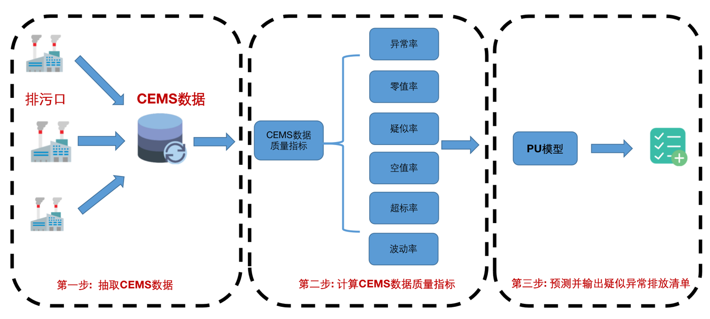
采集 · 传输 · 存储
→
AI
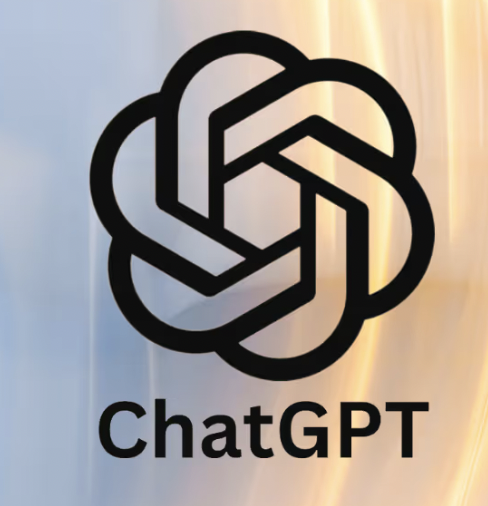
模型 · Agent · 工具
→
BUSINESS VALUE

督查 · 课堂 · 管理
参考 原 PPT P4（学习目标）、P63（课程目的）；示意图：P29 CEMS、原稿 LLM 树、P54 MBA 导师等
LECTURE 1 · 人工智能产业实践
01
PART 1
What AI Shows
人工智能是什么，从哪里来，走到了哪一步
1.1起源与问题：图灵、达特茅斯
1.2四代演进：规则 → 特征 → 表示 → 指令
PART 1 · 1.1 起源与问题
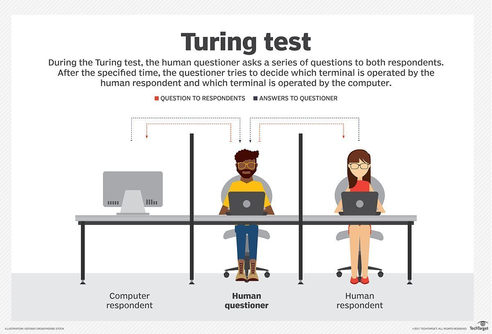
图灵测试：提问者通过文字，判断对面是人还是机器
1950
机器能思考吗？
“I propose to consider the question, ‘Can machines think?’”
图灵把一个哲学问题，换成了一个可检验的行为测试。
来源 A. Turing, “Computing Machinery and Intelligence”, Mind, 1950。 参考 原 PPT P9
PART 1 · 1.1 起源与问题
1955.8.31 · 1956 SUMMER
一个基本猜想
学习的所有特点、以及大多数智能，原则上都可以被精确描述，从而用一台机器来模拟。
麦卡锡、明斯基、香农、罗切斯特，向洛克菲勒基金会提交了达特茅斯人工智能夏季研讨会的提案。
参考 原 PPT P7（达特茅斯提案与评审意见）；J. McCarthy et al., “A Proposal for the Dartmouth Summer Research Project on Artificial Intelligence”, 1955
PART 1 · 1.1 起源与问题
基金会的评审意见
研究内容难以让人彻悟（difficult to grasp very clearly），但鉴于其长期挑战性，基金会愿意资助一半经费。
“…a moderate gamble … hesitant to take any great risk at this stage.”
对思维的数学模型的研究，是一场适度的赌博。
原 PPT P7：申请书首页 · 麦卡锡致洛克菲勒基金会信件（1955.9.2）
我们为什么要“造”AI
不可造也，
未能知也。
What I cannot create, I cannot understand.
— Richard Feynman（黑板上的留言）
参考 原 PPT P7（达特茅斯申请书及评审意见）；评审意见为中英文对照摘录
PART 1 · 1.1 起源与问题
AI 不是一夜出现的：浪潮与寒冬交替
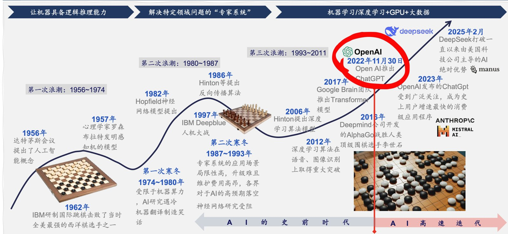
参考 原 PPT P8、P21 的 AI 发展时间线（作者自制）；历史节点：1956 达特茅斯、1986 反向传播、1997 Deep Blue、2006 深度学习、2012 AlexNet、2016 AlphaGo、2017 Transformer、2022.11 ChatGPT、2025.2 DeepSeek
PART 1 · 1.1 起源与问题
AI 无处不在
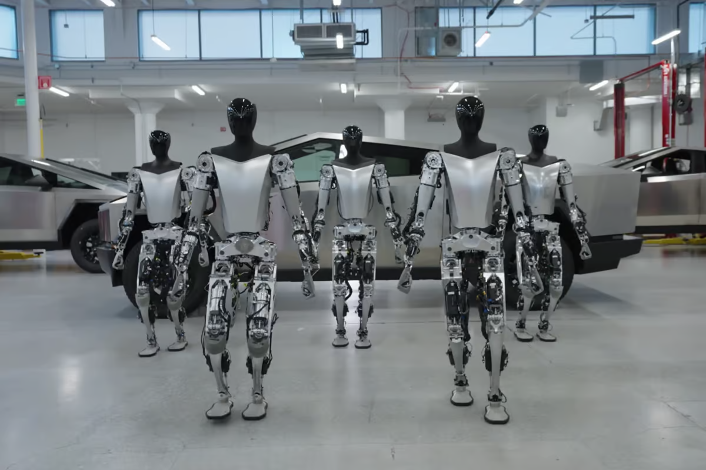
机器人
Optimus 等人形机器人
参考 原 PPT P6、P10（图片沿用原稿，素材来自公开网络）
PART 1 · 1.1 起源与问题
2022.06 · GOOGLE · LaMDA
工程师说：
它觉醒了
Google 工程师 Blake Lemoine 公开他与对话模型 LaMDA 的访谈，称其具有感知（sentience）。
学界的主流看法：流畅的对话 ≠ 意识。但这是公众第一次认真地被一个语言模型说服。
来源 B. Lemoine, “Is LaMDA Sentient? — an Interview”, Medium, 2022-06 https://cajundiscordian.medium.com/is-lamda-sentient-an-interview-ea64d916d917 参考 原 PPT P11（年份已更正为 2022）
PART 1 · 1.1 起源与问题
2023.03.14 · GPT-4
它不只是“看见”，
还理解了幽默
GPT-4 的回答（摘要）
幽默来自于使用一个大而过时的 VGA 连接器，去插一个小而现代的手机充电口的荒谬性。
参考 原 PPT P12；OpenAI, “GPT-4 Technical Report”, 2023-03-14
PART 1 · 1.2 四代演进
谁来做特征提取，谁来做学习？
参考 原 PPT P13–P19 的统一结构图（Feature Extraction + Learning algorithm）；“人 / 机器”的分工为本课的归纳
PART 1 · 1.2 四代演进 · AI 1.0
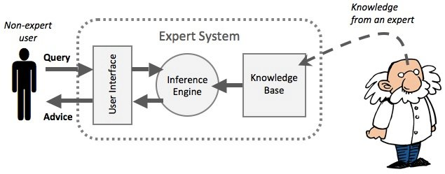
AI1.0专家系统 = 显式知识 + 逻辑推理 + 规则自动化
AI 1.0
专家系统
目标：把人类专家的“经验”形式化成一套可执行的逻辑规则，由计算机自动推理、判断和解释。
参考 原 PPT P13–P15；经典系统 MYCIN（斯坦福，20 世纪 70 年代）：Buchanan & Shortliffe, Rule-Based Expert Systems, 1984
PART 1 · 1.2 四代演进 · AI 1.0 · 演示
勾选症状，看规则如何推理
点击症状 · 规则自动触发
经典案例 · MYCIN
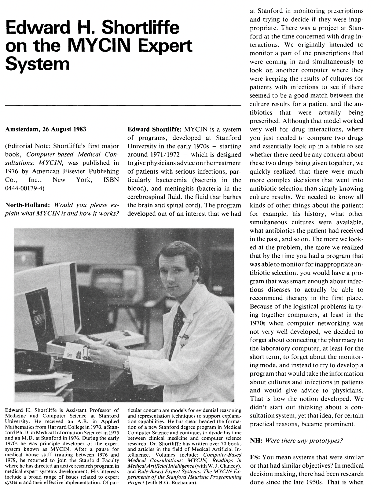
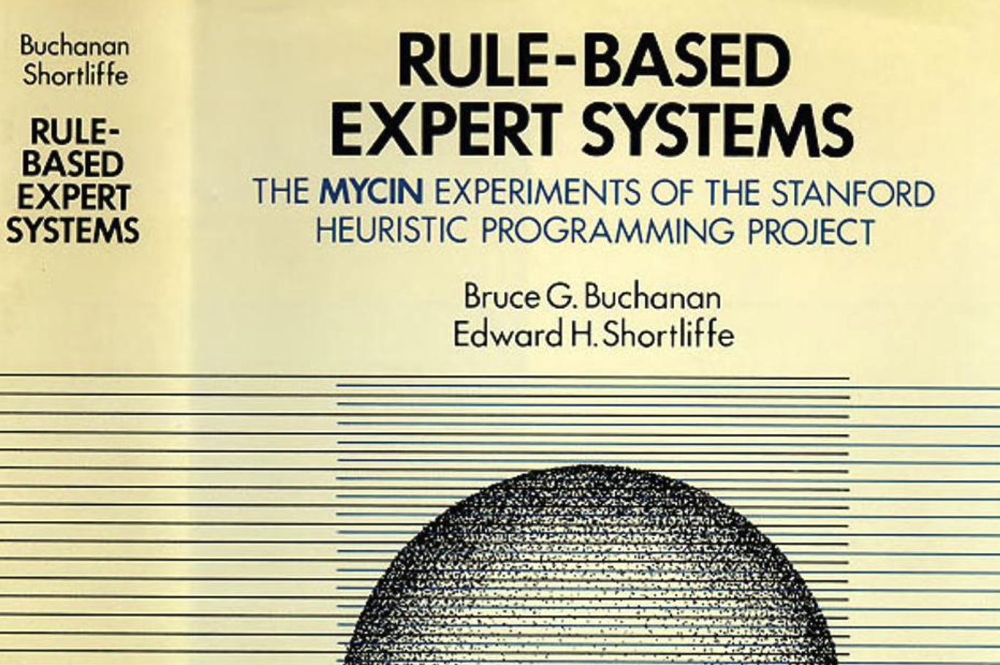
斯坦福，1970 年代——最早成名的医疗规则专家系统之一；本页演示为其 IF–THEN 推理方式的迷你版。
参考 原 PPT P14–P15（MYCIN 史料与规则表示）；演示规则为教学示意，非医学建议
PART 1 · 1.2 四代演进 · AI 1.0
规则能写多少，系统就聪明多少
| 方面 | 优势 | 局限 |
|---|
| 可解释性 | 规则清晰，易于审计和说明 | 规则越多越复杂，难以整体把握 |
| 专家知识 | 能直接复用领域专家的隐性经验 | 隐性知识难提取；更新依赖专家持续投入 |
| 性能 | 规则数量适中时推理速度快 | 规则爆炸时性能急剧下降 |
| 学习能力 | 可通过专家反馈手动扩充知识库 | 缺乏自动学习与自适应，难应对动态环境 |
参考 原 PPT P16
PART 1 · 1.2 四代演进 · AI 2.0

场景：表格化 Data → 人设计特征 X
AI 2.0
机器学习
Machine Learning
人 · 特征工程
FEATURE EXTRACTION
特征提取
基于业务知识构建
X
核心价值表现
Y
→
LEARNING ALGORITHM
学习算法
预测任务
解释性任务
逻辑回归
分类决策树
朴素贝叶斯
机器 · 学规律 f
AI 2.0 = 人构建 X + 学习算法 f → 预测 / 解释 Y
参考 原 PPT P17 版式与文案；图示提取自 Lecture_1.pptx；垃圾邮件案例见 Part 3 / Part 2 §2.4
PART 1 · 1.2 四代演进 · AI 3.0

像素 / 传感器流 → 网络自己学表征
AI 3.0
深度学习 + 强化学习
Deep Learning + Reinforcement Learning
机器 · 表示学习
FEATURE EXTRACTION
特征提取
特征提取 + 算法构建
从图像、语音、对局等原始输入中自动学习表示 —— 不再逐维手工设计 X。
→
LEARNING ALGORITHM
学习算法
预测任务
决策任务
深度学习 DL
强化学习 RL
机器 · 预测与序贯决策
AI 3.0 = 算法构建特征 + 深度网络 / 强化学习 → 预测与决策
参考 原 PPT P18 版式与文案；人脸识别 / 自动驾驶示意 · Lecture_1.pptx；案例展开 Part 2（MMSDS · AlphaGo）
PART 1 · 1.2 四代演进 · AI 4.0 · 演示
AI 4.0 · PRE-TRAINED MODELS
只做一件事：预测下一个词
示意概率，非真实模型输出。亿万次这样的预测，叠加 Transformer 与海量文本，涌现出了对话、推理与写作能力。
参考 原 PPT P19（自然语言的表示 + Transformer；预测下一个词的任务）；A. Vaswani et al., “Attention Is All You Need”, 2017
PART 1 · 小结
Part 1 · 一句话
四代演进的核心区别：“谁来做特征提取”——从规则与专家，到数据驱动的表示学习，再到预测下一个词的预训练大模型。
NEXT → Part 2 · 为什么 AI 现在有用？
LECTURE 1 · 人工智能产业实践
02
PART 2
Why AI Is Useful Now
从“与我无关”到“与你的生活有关”：为什么是现在
2.1AI 1.0 / 2.0：环保督查
2.2AI 3.0：医疗、围棋与科学
2.3AI 4.0：转折点与证据
2.4为什么现在有用：三项能力 + 工具
2.5过去一年更加有用：产业与前沿
PART 2 · 2.1 AI 1.0 / 2.0 的产品
CEMS 数据链：采集设备 → 网络传输 → 云端存储 → 第三方运维
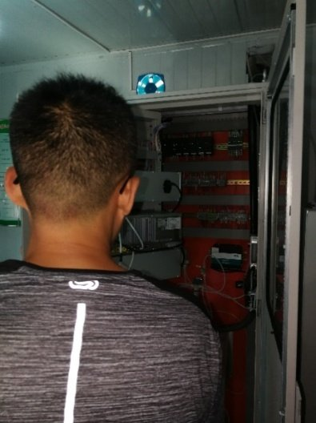
监测设备在企业现场，数据由企业与第三方运维共同保障。
AI 1.0 + AI 2.0 · 环保监测
数据被造假怎么办？
参考 原 PPT P29（CEMS 环保监测）
PART 2 · 2.1 AI 1.0 / 2.0 的产品
让数据告诉督查组：去哪里抓
→
特征提取 · 人
基于业务知识构建特征
异常波动、与同类企业偏离……
→
→
商业逻辑：AI 不取代督查员，而是重新分配稀缺的督查资源。
参考 原 PPT P30（数据驱动环保督查机制；预测任务 + Feature Extraction）
PART 2 · 2.2 AI 3.0 的产品 · MMSDS
AI 3.0 · 医疗产品
医院需要自评抑郁量表
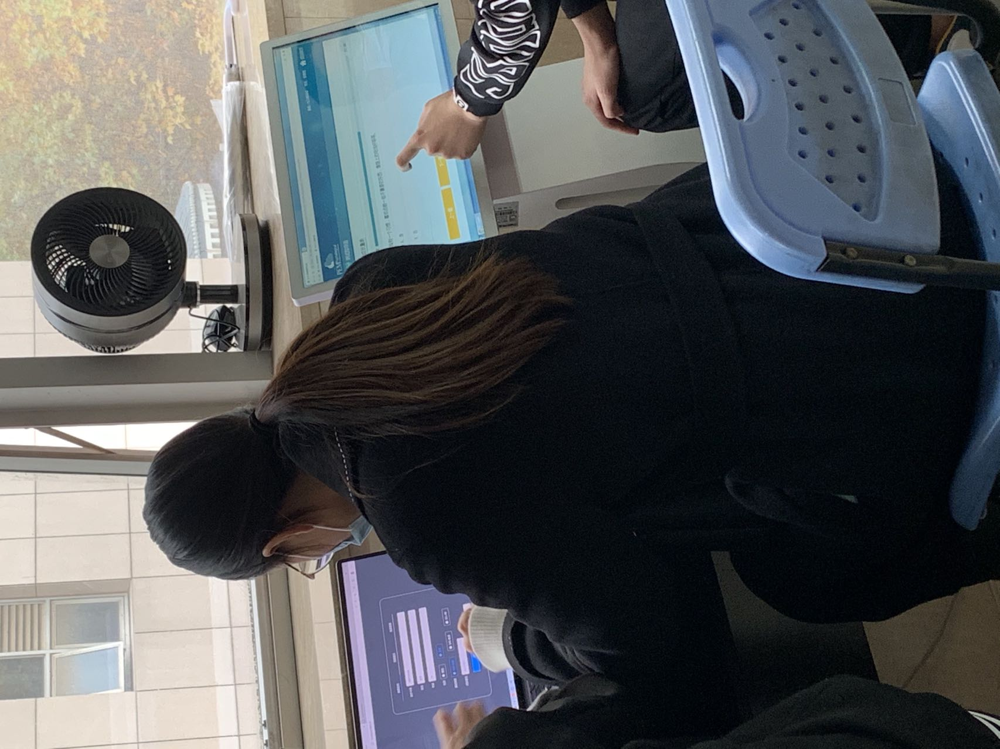
西京心身科测评室 · 患者自助完成电子化抑郁量表（原 PPT P31）
自评量表：筛查抑郁的常规工具，需要稳定、可复核的施测环境
多模态：除问卷外，同步采集语音 · 面部 · 文本 · 头部姿态 + 躯体/心理量表
辅助评估，不替代医生诊断。
MMSDS · 系统实录（原 PPT 动图）
参考 原 PPT P31–P32；素材 `assets/mmsds-*` 提取自 Lecture_1.pptx
PART 2 · 2.2 AI 3.0 的产品
从围棋到诺贝尔奖
2016 · AlphaGo
深度学习 + 强化学习战胜李世石
2024 · 物理学奖
Hopfield、Hinton：人工神经网络与机器学习的奠基性发现
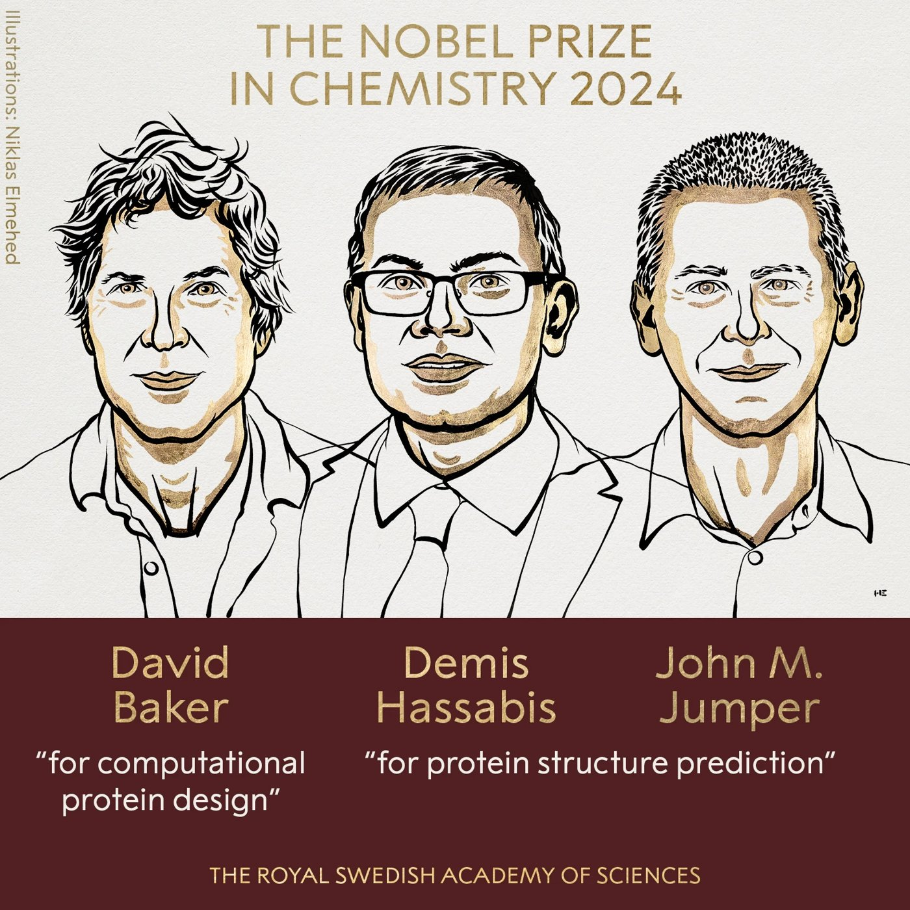
2024 · 化学奖
Baker、Hassabis、Jumper：蛋白质设计与结构预测
参考 原 PPT P33–P35；The Nobel Prize 2024（nobelprize.org）
PART 2 · 2.2 AI 3.0 · 2026 回访
AlphaFold 五年后：科学被加速
300万+
研究者使用 AlphaFold 蛋白质数据库，覆盖 190+ 个国家
+23–32%
此前无结构信息的蛋白质，相关论文数量增长（Berkeley Haas 研究）
尚无
早期药物研发的相应增长——从靶点到获批常需 10–15 年
商业启示
AI 能加速知识生产，但价值落地仍受下游瓶颈（实验、监管、流程）约束。
参考 Google DeepMind：AlphaFold Five Years of Impact [R45]；UC Berkeley Haas 工作论文报道 [R46]；Cancer Research UK 2026-04-21 [R47]
PART 2 · 2.2 AI 3.0 的产品 · 强化学习
自研 ①
日本麻将
四人随机摸牌 · 概率决策（L6 展开）
自研 ②
拳皇 '97
连续控制 + 离散出招 · Linux / MAME + RL
参考 原 PPT P34；翻页静音循环 · 可开声音。素材 `game-mahjong-demo.mp4`、`game-kof-demo-lite.mp4`
PART 2 · 2.2 AI 3.0 · 小结
It’s none of my business.
AI 3.0：很强，但与普通人的日常无关——因为它需要这五件事
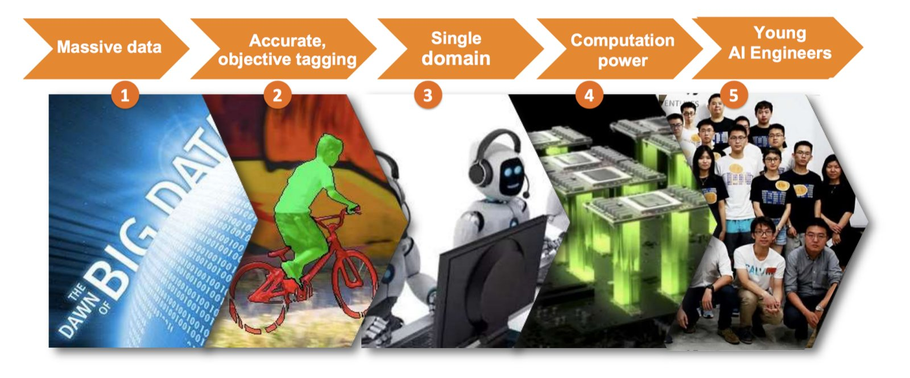
海量数据→
精确标注→
单一领域→
大量算力→
年轻 AI 工程师
参考 原 PPT P36 配图（Massive data → Accurate, objective tagging → Single domain → Computation power → Young AI engineers）
PART 2 · 2.3 AI 4.0 的产品：转折点
It’s for your life.
53%
人口采用率，仅用 3 年——快于个人电脑与互联网
参考 原 PPT P37–P38；Stanford HAI · 2026 AI Index Report [R35][R38]
PART 2 · 2.3 AI 4.0 · 证据
需要判断的任务
增益更小，甚至为负；过度依赖可能拖慢技能积累。
入门岗位承压
美国 22–25 岁软件开发者就业较 2024 年下降近 20%。
参考 Stanford HAI · 2026 AI Index · Economy [R38]。研究区间与口径各异，条形仅作量级对比
PART 2 · 2.3 AI 4.0 · 医疗对照
医生的 AI 助手：写病历
AI 3.0 · MMSDS
为单一任务训练专用模型：数据、标注、算力、工程师缺一不可
AI 4.0 · AI 病历助手
通用大模型 + 语音转写：用指令描述任务，快速铺开
−21.8%
西班牙 48 家医院、103 万次急诊问诊：平均问诊时长
−16分/周
JAMA 多中心研究（8,581 名临床医生）：文书时间
5%
500+ 临床 AI 研究中，使用真实临床数据的比例
⚠ 前两项为观察性研究；最后一项提醒：多数临床 AI 证据仍然偏薄。
参考 西班牙 12 个月评估 [R40]；JAMA 多中心研究 [R41]；Stanford HAI 2026 · Medicine [R39]
PART 2 · 2.4 为什么现在有用
新任务，不再需要收集数据训练
01 · IN-CONTEXT LEARNING
上下文学习
给几个例子，就会做新任务
2026 →
百万 token 上下文：整份合同、整个代码库都能“放进脑子”
02 · CHAIN-OF-THOUGHT
思维链
先一步步想，再给答案
2026 →
推理模型：可独立完成的任务从 4 分钟（GPT-4）到 12 小时（Opus 4.6）
03 · NATURAL INSTRUCTIONS
指令学习
用自然语言说明要做什么
2026 →
Agent Skills：把指令沉淀成可移植的“技能包”，已有 100 万+
共同点：像人一样思考 · 无需训练新模型 · 具备类比能力
参考 原 PPT P39；上下文长度 [R1][R13]；METR 时间跨度 [R22]；Agent Skills [R32]
PART 2 · 2.4 为什么现在有用 · 演示
同一封邮件，三种提示方式
示意输出，非真实模型调用；意在说明三种能力如何改变结果的稳定性与可解释性。
参考 原 PPT P39 的 Prompt 示例（上下文学习 / 思维链 / 指令学习）；场景为课程设计
PART 2 · 2.4 为什么现在有用 · 工具
模型加上工具，就能做事
→
2026
计算机使用
直接操作浏览器与应用；OSWorld 成功率一年内 12% → 约 66%
2023 · CODE INTERPRETER
代码解释器
→
2026
编码 Agent
Codex、Claude Code：读代码库、写、运行、修复；Codex 每周 >500 万用户
→
2026
MCP · Skills · A2A
统一标准连接工具、知识与其他 Agent
参考 原 PPT P40（Web Browsing / DALL·E / Code Interpreter）；Stanford AI Index [R35]；ChatGPT Work [R16]；AAIF [R32]
PART 2 · 2.5 过去一年更加有用
2.5
PART 2 · SECTION 2.5
过去一年更加有用
2025.10 → 2026.11 · 一年前的发布会，一年后的结果
A头部公司：Anthropic · OpenAI · 中国五家
B共同特点：更强模型 · Agent · Harness · 长程
C前沿：RSI · 物理 AI · AI4S
PART 2 · 2.5 过去一年更加有用 · 模型
2026：每个月都有新前沿
参考 厂商官网与发布说明 [R1][R2][R6][R7][R13][R14][R16][R28][R30]、OpenAI [R63–R65]、中国公司 [R80–R104]；⚠ Gemini 4 为二手聚合站信息 [R29]，请标注“据公开报道”
PART 2 · 2.5 过去一年更加有用 · Anthropic
Anthropic：从 Opus 4.6 到 Fable / Mythos 5.2
橙色：Mythos Preview——能力过强，不公开发布，仅限合作方做防御性网络安全。
参考 Anthropic Models 页 [R1]；Claude 发布说明 [R2]；Project Glasswing [R3]；Fable 5 / Mythos 5 [R6]；Fable 5.2 [R7]
PART 2 · 2.5 过去一年更加有用 · Anthropic
2026.04.07 · CLAUDE MYTHOS PREVIEW
能力太强，所以不公开发布
仅限
Project Glasswing 合作方 · 防御性网络安全
新范式：能力—风险分级发布
最强的模型先给防守方，不到 3 个月后，以带护栏的版本公开（Fable 5）。
参考 Anthropic：Mythos Preview 评估 [R4]、Project Glasswing [R3]、System Card [R5]；WIRED [R36]
PART 2 · 2.5 过去一年更加有用 · Anthropic
Fable 5 与 Mythos 5：同一个模型，两种配置
Fable 5
公开带安全护栏 · $10 / $50 每百万 token
5 个月后 · 2026.11.09 · Fable / Mythos 5.2
Anthropic 称：内部测试中，模型“30 小时内形式化证明了费马大定理”，并解决两个黑洞物理开放问题。⚠ 厂商自述，尚待独立验证。
参考 Claude Fable 5 and Mythos 5 [R6]；Claude Fable 5.2 and Mythos 5.2 [R7]；The Verge [R36]
PART 2 · 2.5 过去一年更加有用 · Anthropic 产品
NOT JUST MODELS · 2024.06 → 2026.09
模型之外，五条产品线在长大
工作台
对话 → 可编辑成品
2024.06Artifacts · Projects
2025.06AI 驱动的 Artifacts
2025.09生成 Excel / PPT / PDF
2026.04Claude Design
2026.09Slides · Docs
编码 Agent
终端 → 云端 → 多 Agent
2025.02Claude Code 预览
2025.051.0 正式发布
2025.092.0 · Agent SDK
2025.10网页版云端会话
2026.03Auto mode · Code Review
2026.09云端会话 GA
操作电脑
屏幕 → 浏览器 → 桌面
2024.10Computer use
2025.08Claude in Chrome
2026.01Cowork 预览
2026.03Cowork 可操作电脑
2026.08Chrome · Computer use 正式版
2026.09Cowork 并入所有对话
连接 · 技能
工具与方法可复用
2024.11MCP 开源
2025.05Integrations
2025.10Agent Skills · Plugins
2025.12MCP / Skills 开放标准
2026.01MCP Apps
2026.09Marketplace
搜索 · 记忆
知道更多，记得更久
2025.02可见的思考
2025.03Web search
2025.04Research
2025.09Memory
2026.03Memory 免费
2026.08记忆跨聊天 / Cowork
接下来逐条看：每项功能的出现时间、解决什么问题，以及官方界面截图。
参考 Claude Help Center release notes [R49]；Claude Code changelog [R50]；Anthropic 官方发布页 [R51–R58]。⚠ 部分日期交叉取自二手汇编 [R59]
PART 2 · 2.5 过去一年更加有用 · Anthropic 产品
WORKSPACE · 对话旁边的工作台
从聊天框到工作台
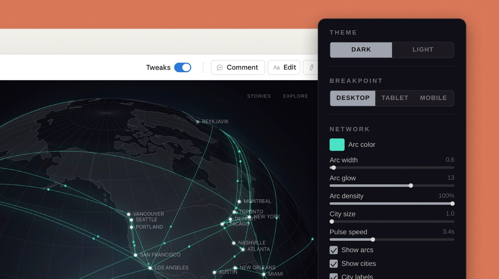
2026.04 · Claude Design：对话里做设计、原型、幻灯片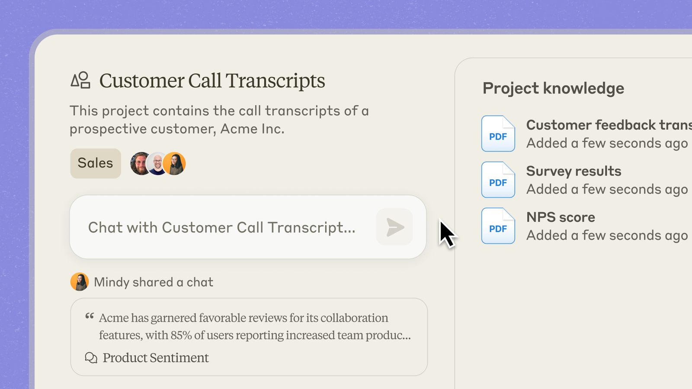
2024.06 · Projects：项目知识库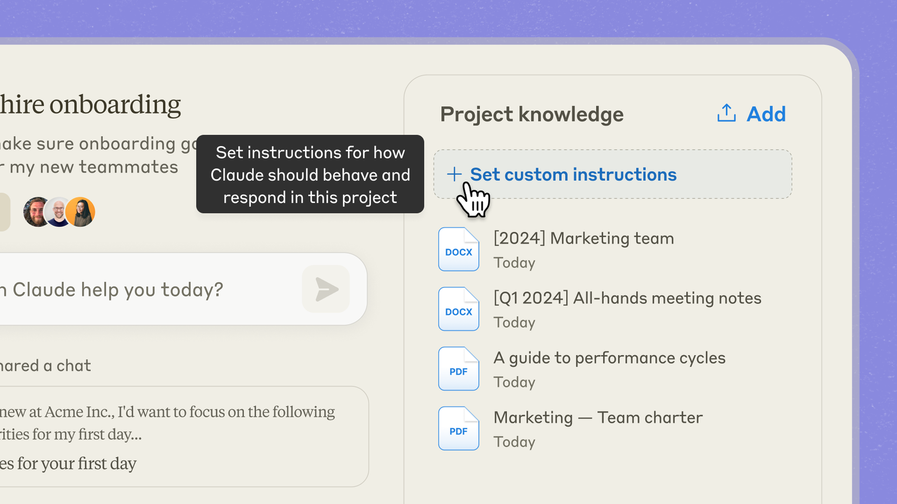
Projects：自定义指令
2024.06.20Artifacts：代码、文档、网页在对话旁实时预览、编辑
2024.06.25Projects：项目知识库 + 自定义指令（200K 上下文）
2025.06.25AI 驱动的 Artifacts：作品里内嵌 Claude，成为小应用
2025.09.09直接生成 Excel、PPT、文档、PDF 文件
2025.10.21Artifacts 接入 MCP 与持久存储（应用能存数据）
2026.04.17Claude Design：设计、原型、幻灯片（Opus 4.7）
2026.09.16Claude Slides、Docs；Design 并入所有对话
产出物从“一段文字”变成可编辑、可分享的成品——AI 开始交付，而不只是回答。
参考 Artifacts 与 Projects [R51]；Claude Design [R53]；Help Center release notes [R49]；⚠ 2025 年条目取自汇编 [R59]
PART 2 · 2.5 过去一年更加有用 · Anthropic 产品
CONNECT · 工具与方法，都可复用
给 AI 接上工具，教会它方法
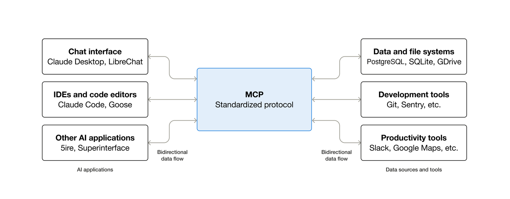
MCP：用统一协议连接应用、数据与工具（Anthropic 官方示意）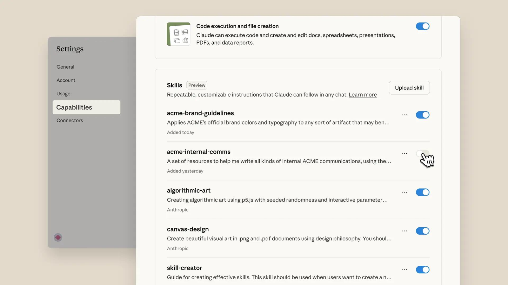
2025.10 · Skills：在设置中开关MCP vs Skills
MCP：能连什么（工具、数据）
Skills：该怎么做（流程、规范）
2024.11.25MCP 开源：AI 与工具之间的统一协议
2025.05.01Integrations：通过远程 MCP 连接你的应用
2025.07.14Connectors 目录：一键连接
2025.10.16Agent Skills：指令 + 脚本 + 资源，按需加载
2025.12.09MCP 捐给 Linux Foundation 旗下 AAIF
2025.12.18Skills 组织级管理；Agent Skills 成为开放标准
2026.01.26MCP Apps：Slack、Figma 等在对话里直接打开
2026.09.23Claude Marketplace：2,000+ 连接器与插件
这条线与后文“Agent 的基础设施”相接：MCP + Skills 已是行业共同标准，而不只是 Anthropic 私有功能。
参考 MCP [R52]；Skills [R57]；Help Center [R49]；AAIF 见 [R32]；Marketplace 条目取自汇编 [R59]
PART 2 · 2.5 过去一年更加有用 · Anthropic 产品
PLATFORM · 给开发者的积木
从一次问答，到可编程的 Agent
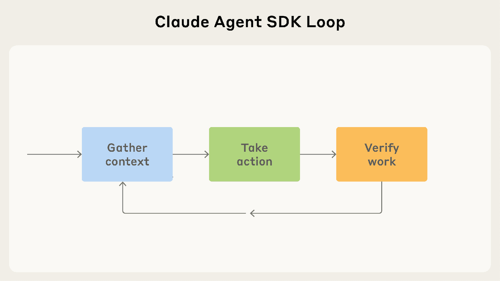
Claude Agent SDK 的核心循环：收集上下文 → 采取行动 → 验证工作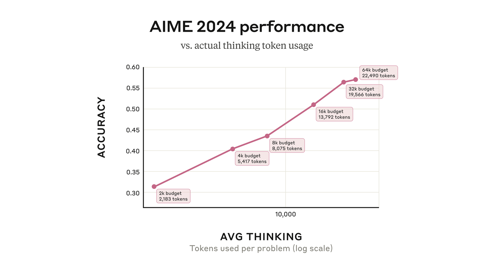
2025.02 · 思考越久，AIME 成绩越高给企业的“积木”
缓存与批处理降成本；引用与结构化输出保证可审计、可集成。
2024.08.14Prompt caching：降本最高 90%、降延迟最高 80%
2024.10.08Message Batches：批量处理，成本再降 50%
2025.01.23Citations：回答能指向原文出处
2025.02.24可见的 Extended thinking（随 Claude 3.7 Sonnet）
2025.05.22代码执行、Files API、MCP connector、Web search 工具
2025.09.29Claude Code SDK 更名 Claude Agent SDK；Memory 工具
2025.11.14Structured outputs：保证 JSON 形状
2026.05.06Managed Agents：多 Agent 编排、任务完成回调
同一套“Agent 循环”，从 Claude Code 里拆出来变成开发者可用的积木——企业自建 Agent 的门槛在下降。
参考 Agent SDK [R57]；Claude 3.7 Sonnet [R58]；Release notes [R49][R59]；⚠ “降本 90% / 降延迟 80%” 为官方 beta 公告数字
PART 2 · 2.5 过去一年更加有用 · Anthropic 产品
CLAUDE CODE · 2025
不是补全代码，而是替你动手的 Agent
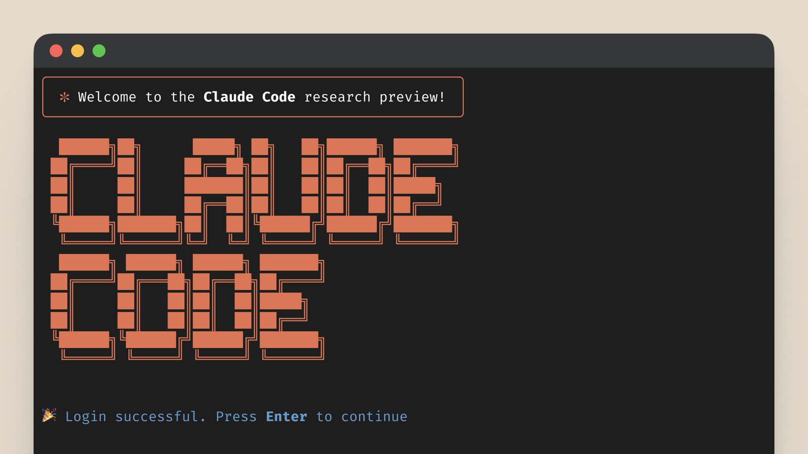
2025.02 · Claude Code 研究预览：终端里的 Agent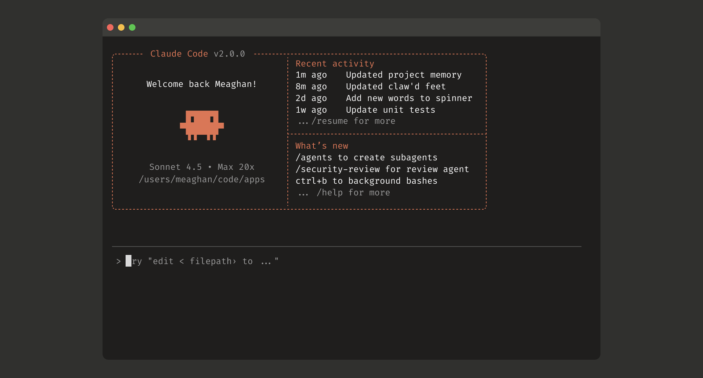
Claude Code 2.x 终端 读文件 → 改代码 → 请求确认
读文件 → 改代码 → 请求确认
2025.02.24Claude Code 研究预览（随 Claude 3.7 Sonnet）
2025.05.221.0 正式发布：VS Code / JetBrains / GitHub Actions
2025.06.04Pro 订阅即可使用，无需单独 API 账单
2025.06.30Hooks：在关键节点运行你自己的命令
2025.07.24自定义 subagents（/agents）：专职助手
2025.09.292.0：原生 VS Code 扩展、/rewind 撤销
2025.10.09Plugins：把命令、agent、hooks、MCP 打包分发
Claude Code 2026 年 2 月年化收入已超 $25 亿[R8]——一个“非模型”产品，成了增长引擎。
参考 Claude 3.7 Sonnet 与 Claude Code 预览 [R58]；Claude Code changelog [R50]；Series G [R8]；⚠ 2025 年条目取自汇编 [R59]
PART 2 · 2.5 过去一年更加有用 · Anthropic 产品
CLAUDE CODE · 2025.10 → 2026.09
从“我盯着它写”到“交代目标，它自己跑”
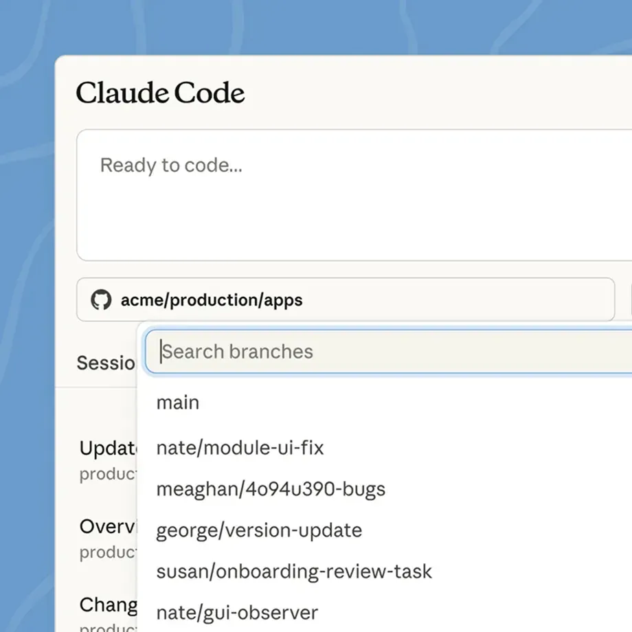
2025.10 · Claude Code on the web终端里的编辑与确认
2025.10.20Claude Code on the web：云端运行，浏览器里派活
2025.12.08Slack 里 @Claude，直接开一个编码会话
2026.01.07/teleport：本机与云端会话互相迁移
2026.03.09Code Review：多 Agent 审每个 PR（预览）
2026.03.24Auto mode：分类器代替逐步审批（预览）
2026.04.14Routines：按时间 / 事件，在云端定时执行
2026.05.11Agent view；/goal：设条件，持续干到达成
2026.09.23云端会话（cloud sessions）正式可用
人的角色在变化：从逐步确认，到设目标、定边界、验结果——这正是管理者的工作方式。
参考 Claude Code changelog [R50]；Help Center [R49]；⚠ 多数条目取自汇编 [R59]；并发 / 嵌套上限来自 2026.07 的 changelog 摘要
PART 2 · 2.5 过去一年更加有用 · Anthropic 产品
COMPUTER USE · 看屏幕、点鼠标
AI 从“回答”走到“操作”
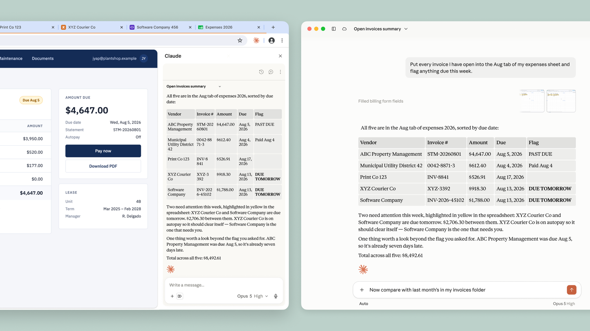
2026.08 · Claude in Chrome 正式可用2024.10 · Computer use 官方演示
2024.10.22Computer use（API 测试版）：看截图、移动光标、点击、打字
2025.08.26Claude in Chrome：实验性扩展，少量 Max 用户试点
2025.12.18Chrome 扩展 beta 开放全部付费计划；可录制工作流
2026.03.23Computer use 进入 Cowork 与 Claude Code（预览）
2026.08.19API 中 Computer use 正式可用；新增 browser use
2026.08.26Chrome 正式可用：可自主执行，每步经分类器校验
代价是新风险：网页里可能藏有恶意指令（提示注入），所以要逐动作校验、站点白名单。
参考 Computer use [R52]；Chrome 试点 / GA [R54]；Help Center [R49]；⚠ Chrome GA：Claude Code changelog 记 2026.07.01，消费者公告为 08.26 [R59]
PART 2 · 2.5 过去一年更加有用 · Anthropic 产品
COWORK · 2026
把 Claude Code 的做法，带给所有知识工作者
2026.01 · Claude Cowork：面向非编码工作的 Agent
2026.01.12Cowork 研究预览（Max · macOS）：读、改、整理文件
2026.01.16开放给 Pro 用户
2026.03.17手机上遥控桌面任务（预览）
2026.03.23可操作电脑（computer use）
2026.07.07网页 / 手机版；远程会话：合上电脑任务继续
2026.08.26桌面端内置浏览器
2026.09.16Cowork 与聊天合一：任何对话都能交办大任务
2026 年 2 月，Cowork 插件曾引发软件股抛售（见后页 SaaSpocalypse [R31]）——功能发布也能移动市场。
参考 Cowork 研究预览 [R56]；Help Center [R49]；SaaS 抛售 [R31]；⚠ 部分日期取自汇编 [R59]；图为官方页面截图 / 宣传片截帧
PART 2 · 2.5 过去一年更加有用 · Anthropic 产品
WHERE WORK HAPPENS · Office 与垂直场景
Claude 去你已经在用的地方
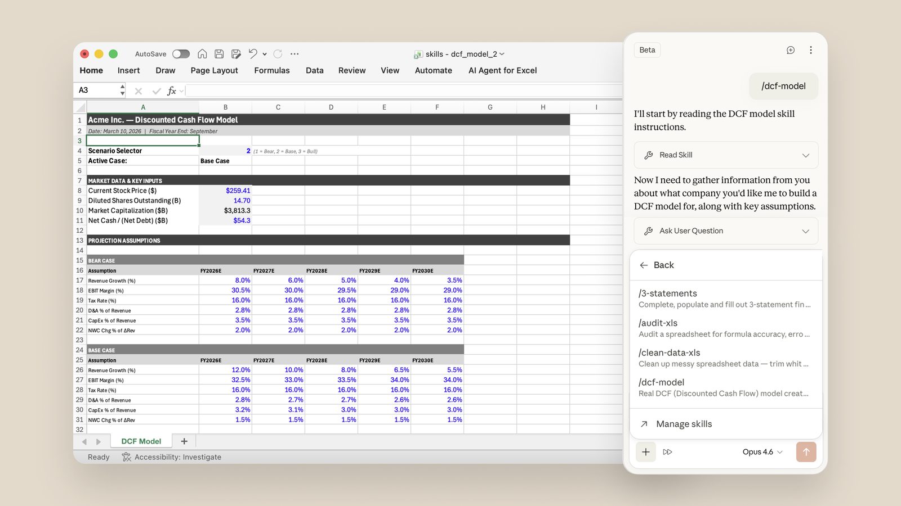
2026.03 · Excel 与 PowerPoint 共享对话上下文教育
2025.04 Claude for Education：学习模式引导思考；2026.07 Teachers
医疗
2026.01 HIPAA 就绪的 Enterprise；可读健康数据（美国）
科学
2026.06 Claude Science：研究工具 + 可审计产物
协作
2026.06 Claude Tag：在 Slack 里 @Claude 派任务
2025.09.15Claude 进入 Xcode 26；09.24 进入 Microsoft 365 Copilot
2025.11.24Claude for Excel（beta）
2026.02.05Claude for PowerPoint；Excel 支持透视表等原生操作
2026.03.11Excel ↔ PowerPoint 共享上下文；支持 Skills
2026.04.10Claude for Word（Team / Enterprise beta）
2026.03三大云（Bedrock · Vertex AI · Foundry）均可接入
企业软件的入口之争：不是让你来我的 App，而是我去你的 Excel——这是 SaaS 格局变化的另一面。
参考 Excel / PowerPoint [R55]；Help Center [R49]；⚠ 行业条目取自汇编 [R59]，医疗功能为美国市场
PART 2 · 2.5 过去一年更加有用 · Anthropic 产品
SEARCH · RESEARCH · MEMORY
知道得更多，也记得更久
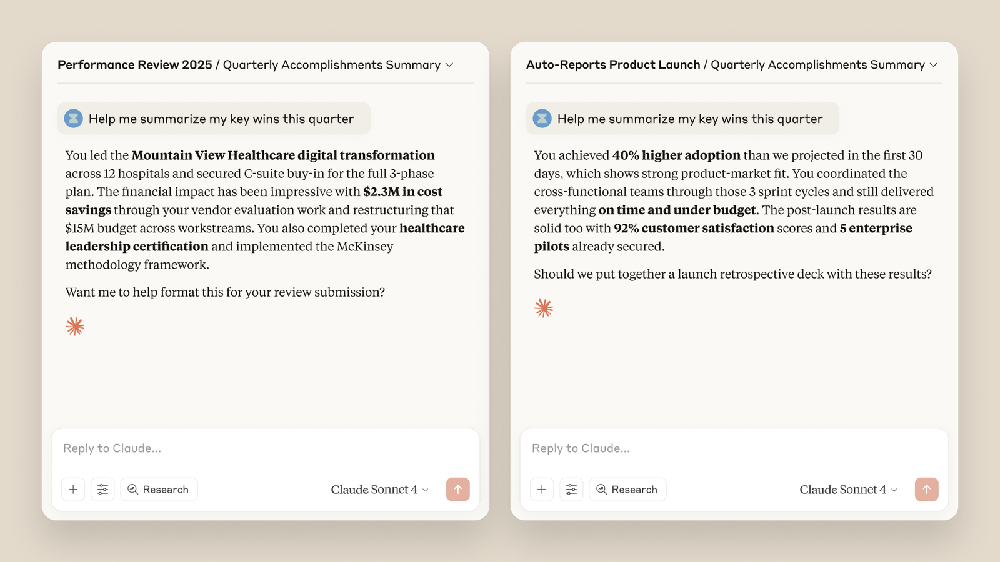
2025.09 → 2026 · Memory：跨对话的记忆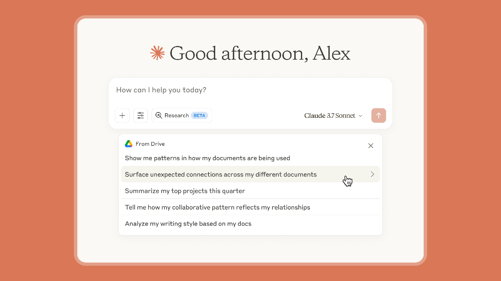
2025.04 · Research：多步检索与综述
2025.03.20Web search（带引用）：第一次能“上网查”
2025.04.15Research + Google Workspace 集成；05.01 最长 45 分钟
2025.05.27Web search 向全部计划、全球开放
2025.09.11Memory（Team）+ 隐身聊天
2025.10.23Memory → Max，随后 Pro
2026.03.02Memory 免费用户可用；可导入 / 导出
2026.07.10记忆变成可逐条查看的条目
2026.08.25记忆在聊天与 Cowork 间共享；敏感话题默认不进
个性化的收益与隐私可控是一对张力：官方的做法是“可查看、可删除、可隐身”。
参考 Research [R58]；Memory [R58]；Help Center [R49]；⚠ 2025 年条目取自汇编 [R59]
PART 2 · 2.5 过去一年更加有用 · Anthropic 产品
TAKEAWAYS · 课程归纳
Anthropic 卖的，不只是模型
→
2024–25
工作台
Artifacts · Projects
→
→
2026
通用 Agent
Cowork · Chrome · Computer use
1 · 能力 → 形态
每次能力跃升，都伴随新的产品形态：Artifacts、Claude Code、Cowork。
2 · 开放 → 生态
MCP、Agent Skills 捐给 AAIF：让整个行业为你做集成。
3 · 能做 → 敢用
权限、分类器、隐身聊天、合规 API：信任与控制是企业采用的前提。
问自己：我的工作里，哪一环可以交给 Agent？ 又需要什么边界？
参考 综合前述各页 [R49–R59]；“三点启示”与阶段划分为课程归纳，非 Anthropic 官方说法
PART 2 · 2.5 过去一年更加有用 · Anthropic
估值
$380B（2 月）→ $965B（5 月）
IPO 招股估值最高约 $1.4T
Claude Code
2026.02 年化收入 > $2.5B
⚠ 口径提醒
Anthropic 的 run-rate 含云伙伴销售；OpenAI 只计自己的分成，二者不可直接比较。
参考 Series G [R8]；Reuters [R9]；CNBC 2026-11-10 [R10]；口径说明 [R34]。2025 年底约 $9B 为报道估计
PART 2 · 2.5 过去一年更加有用 · Anthropic · IPO 招股书（S-1）
招股书：增长极快，也烧钱极猛
单位：十亿美元（SEC 文件 S-1/A，未经审计的 2026 前三季度）
| 2023 | 2024 | 2025 | 9M 2025 | 9M 2026 |
| 收入 | 0.04 | 0.39 | 4.59 | 2.55 | 33.24 |
| 算力与基础设施 | 0.43 | 2.52 | 7.33 | 4.38 | 18.81 |
| 营业亏损 | −0.55 | −2.98 | −8.06 | −5.22 | −1.26 |
| 净亏损 ⚠ | −1.53 | −8.31 | −41.97 | −25.11 | −104.04 |
Q3 2026 收入
$17.0B，环比仅 +47%（Q2 +144%）
⚠ 净亏损的主因
可转债 / 衍生负债公允价值变动，非经营亏损
发行 · 纳斯达克 “ANT”
8.25 亿股 × $70–78
募资约 $578–644 亿
隐含估值（完全稀释）
$1.26–1.40T
5 月融资 $965B；传闻目标 $2T
经营质量
H1 毛利率约 85%；客户 >$10 万 的有 11,900+ 家；净收入留存 ≈ 900%
代价与治理
算力承诺约 $9,000 亿；现金+短投约 $1,320 亿；公益公司 + 长期利益信托
参考 SEC S-1/A [R60]；CNBC 2026-11-02 [R61]；TechCrunch 2026-11-10 [R62]。⚠ 估值口径：Reuters 按已发行股数测算最高约 $1.02T，TechCrunch 按完全稀释 $1.404T；区间尚未定价
PART 2 · 2.5 过去一年更加有用 · OpenAI 总览
OPENAI · 2024.09 → 2026.11
从聊天框到常驻的 Agent：五条线
模型
推理 → 统一 → 代际跃迁
2024.09o1 推理模型
2025.02GPT-4.5
2025.08GPT-5 · gpt-oss
2025.12GPT-5.2
2026.04GPT-5.5 · 1M 上下文
2026.09GPT-6 Astra
ChatGPT 产品
从聊天框到日常入口
2024.10Canvas · Search
2025.01Tasks 定时任务
2025.04Memory 记住对话
2025.09Pulse 每日简报
2025.11群聊 · Company knowledge
2026.01Go · 广告
Agent · 电脑
回答 → 代做 → 常驻
2025.01Operator
2025.02Deep research
2025.07ChatGPT agent
2025.10Atlas 浏览器
2026.07ChatGPT Work
2026.09Dots 常驻 Agent
Codex · 平台
编码 → 通用 → 可嵌入
2025.04Codex CLI
2025.05Codex 云端
2025.10Apps SDK · AgentKit
2026.02GPT-5.3-Codex
2026.07Codex 并入 ChatGPT
2026.09Agents API
图像 · 视频
惊艳 → 取舍
2025.034o 图像生成
2025.09Sora 2 应用
2025.12ChatGPT Images
2026.03宣布关停 Sora
2026.04GPT Image 2
2026.11Image 2.6
接下来：模型时间线（3 页）→ 产品与 Agent → 数字与资本 → 与 Anthropic 对照。
参考 Model release notes [R13]；API changelog [R14]；OpenAI 官方发布页 [R63–R71]；ChatGPT Work [R16]；Sora 关停 [R17]。⚠ 少数 2025 年日期依公告页标注
PART 2 · 2.5 过去一年更加有用 · OpenAI 模型
MODELS ① · 让模型先想再答
先学会思考，再合成一个 GPT-5
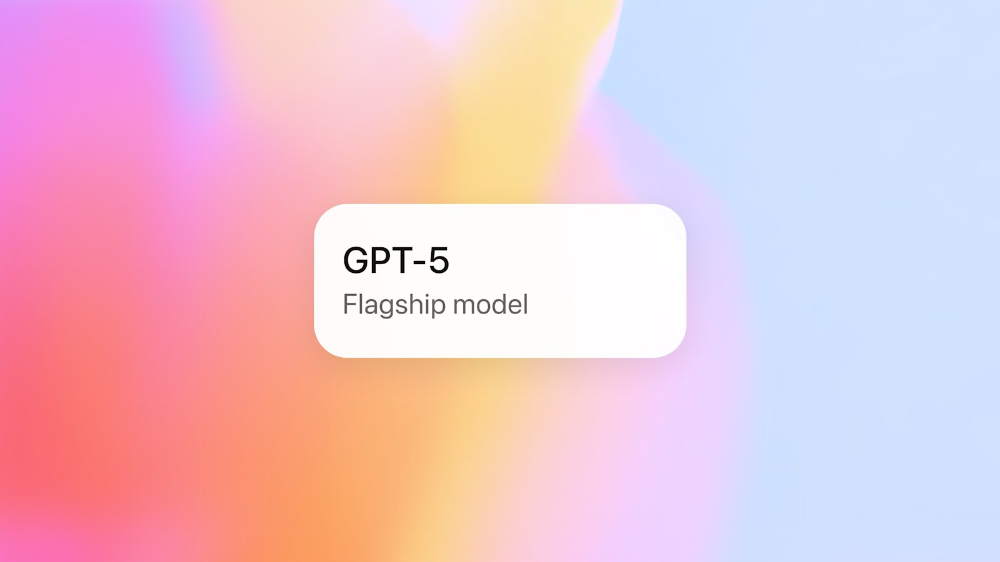
2025.08.07 · GPT-5：自动切换的统一系统2025.04 · o3 / o4-mini
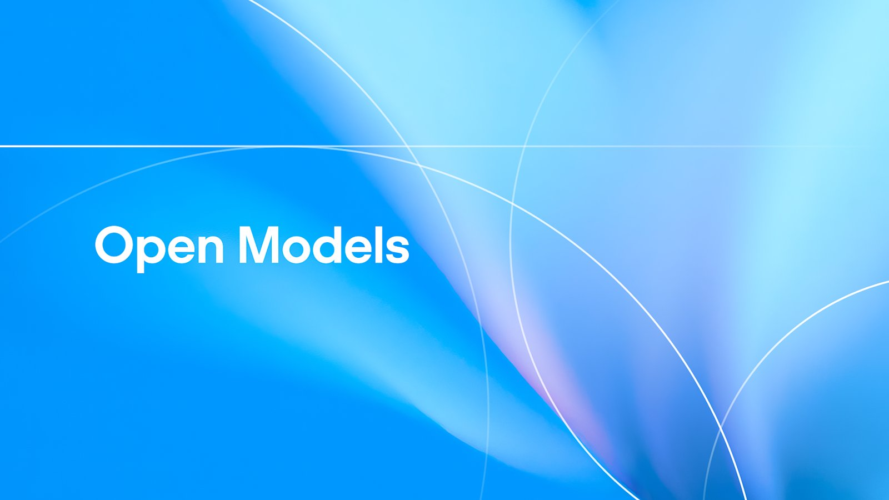
2025.08 · gpt-oss 开放权重
2024.09.12o1-preview：先思考再回答的推理模型
2025.01.31o3-mini：低成本推理，支持联网搜索
2025.02.27GPT-4.5：最大预训练模型，研究预览（仅 Pro）
2025.04.14GPT-4.1：API 专用，100 万 token 上下文
2025.04.16o3 / o4-mini：推理 + 工具 + 看图思考
2025.06.10o3-pro：花更多算力换可靠性
2025.08.05gpt-oss-120b / 20b：开放权重，Apache 2.0
2025.08.07GPT-5：路由自动选快/慢模型；SWE-bench 74.9%
路线收敛：推理模型 + 普通模型 → 一个“自动选档”的统一系统，用户不必再研究选哪个模型。
参考 Model release notes [R13]；GPT-5 / GPT-4.1 / o3 / gpt-oss 发布页 [R63][R64]。⚠ SWE-bench 74.9% 为 OpenAI 自报
PART 2 · 2.5 过去一年更加有用 · OpenAI 模型
MODELS ② · 小步快跑，约每 1–3 个月一代
GPT-5 之后：每一代都在“做完整件工作”
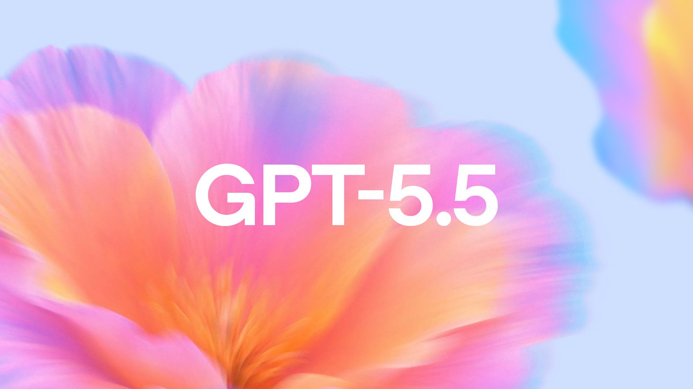
2026.04.23 · GPT-5.5：1M 上下文、内置计算机使用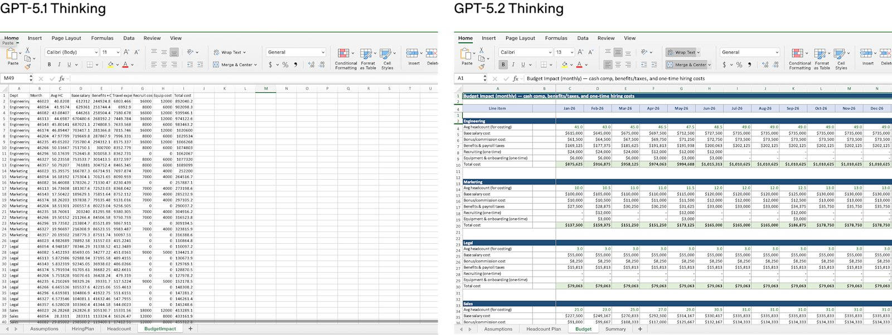
5.2 vs 5.1：表格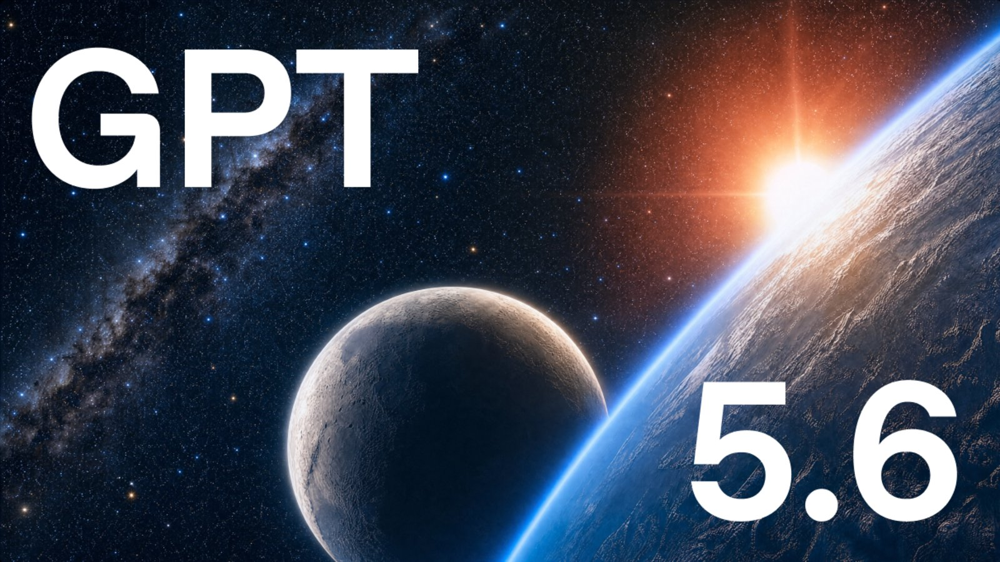
2026.07 · GPT-5.6 + ChatGPT Work
2025.11.12GPT-5.1：更会按指令说话；Codex-Max 随后（11.19）
2025.12.11GPT-5.2：GDPval 70.9%，强在表格、幻灯片
2026.02.05GPT-5.3-Codex：Codex 与 GPT-5 训练合流
2026.02.13GPT-4o、GPT-4.1、o4-mini 等从 ChatGPT 下线
2026.03.05GPT-5.4：1M 上下文、原生 computer use；GDPval 83.0%
2026.04.23GPT-5.5：GDPval 84.9%；OSWorld-Verified 78.7%；API $5 / $30
2026.07.09GPT-5.6 Sol / Terra / Luna：三档价格，与 ChatGPT Work 同日
看点从“答对题”变成“交付工作成果”：GDPval、OSWorld 这类职业任务 / 电脑操作基准成为主角。
参考 Release notes [R13]；API changelog [R14]；GPT-5.x 发布页 [R63]；Codex [R66]。⚠ 基准为 OpenAI 自报；价格 = 美元 / 百万 token
PART 2 · 2.5 过去一年更加有用 · OpenAI 模型
MODELS ③ · GPT-6：旗舰 + 便宜档并行
GPT-6：旗舰一枝独秀，便宜档快速跟上
2026.09.03 · GPT-6 Astra
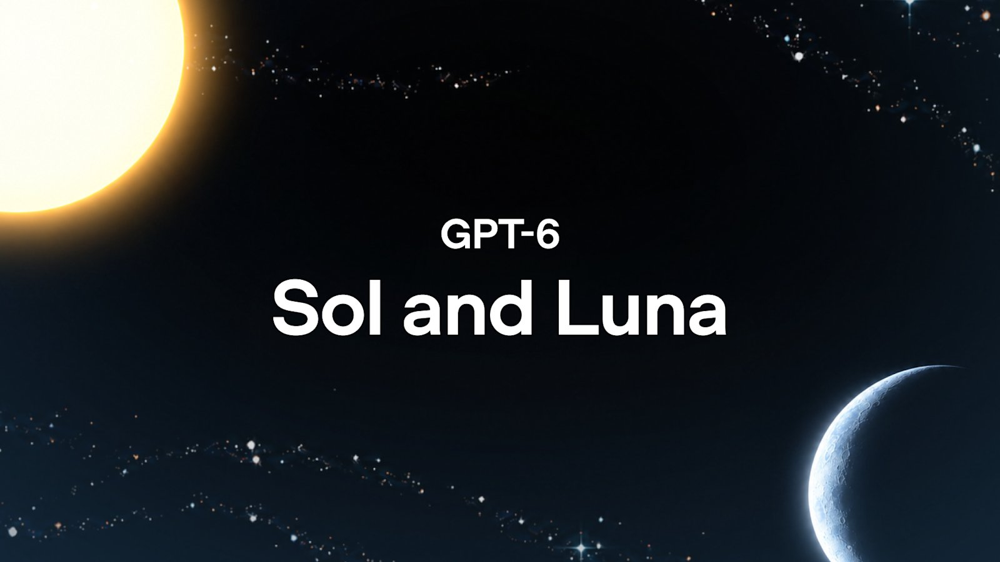
09.22 · Sol / Luna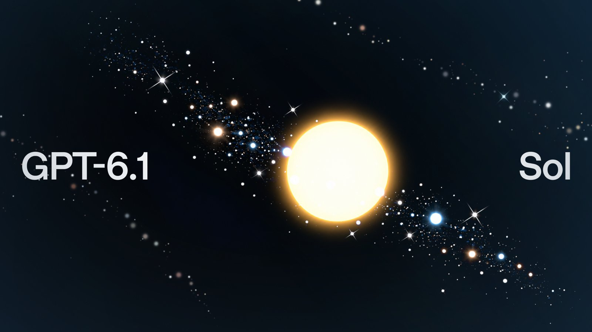
09.29 · GPT-6.1 Sol
2026.09.03GPT-6 Astra：电脑使用、编码、科研；API $10 / $50
2026.09.03Astra 为首个达“Critical”网络安全阈值的模型，先限量放出
2026.09.22Sol / Luna：Sol $2 / $10；Luna $0.10 / $0.50
2026.09.29GPT-6.1 Sol：近 Astra 水平，价格仅其 1/5
2026.10.14GPT-5.5 从 ChatGPT 下线（API 不受影响）
2026.10.26GPT-6.1 Terra：$1 / $5，视觉推理与电脑使用
2026.10.30GPT-6 Rosalind：生命科学研究，仅限审批客户
近似水平，约 4 周内降到 1/5 价格；GPT-4（2023）$30 / $60 → GPT-6.1 Sol $2 / $10。
参考 GPT-6 系列发布页 [R65]；API changelog [R14]；Release notes [R13]。⚠ 基准为 OpenAI 自报；GPT-4 为 2023 年公开报价 [R75]
PART 2 · 2.5 过去一年更加有用 · OpenAI ChatGPT
CHATGPT ① · 对话变成“工作台 + 助理”
聊天框里长出编辑区、搜索与记忆
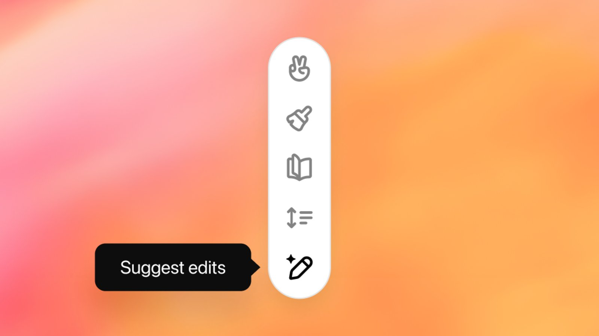
2024.10 · Canvas：对话旁的编辑区2024.10 · 联网搜索
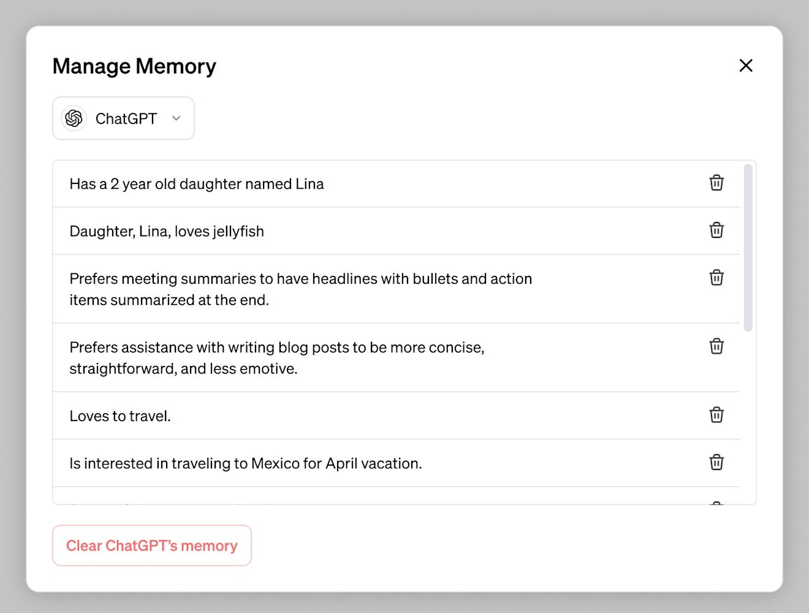
2025.04 · Memory 管理
2024.09.24Advanced Voice：原生语音，实时对话
2024.10.03Canvas：在对话旁协同写作 / 写代码
2024.10.31ChatGPT search：带来源链接的联网回答
2025.01.14Tasks：定时 / 重复执行（beta）
2025.04.10Memory：引用历史对话，越用越懂你
2025.06.07Voice 升级：自然语调，实时翻译
2026.05.28GPT-5.5 起 Canvas 退场，改为对话内的写作块 / 代码块
功能一路“长”出来，最后又被合并回对话本身——产品在持续收敛。
参考 Model release notes [R13]；Canvas / Search / Memory 页面 [R68]。⚠ Search、Memory 日期取自官方公告页
PART 2 · 2.5 过去一年更加有用 · OpenAI ChatGPT
CHATGPT ② · 从工具到“日常入口”
ChatGPT：成为每天的入口
2025.09 · Pulse：每天为你准备一份简报
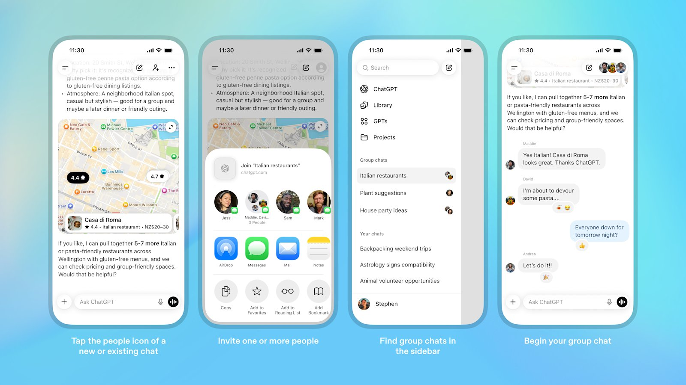
2025.11 · 群聊2025.12 · 新 ChatGPT Images
2025.09.25Pulse：基于记忆与你的关注，每天主动推送
2025.11.20群聊：多人 + ChatGPT 同一对话
2025.12.16新 ChatGPT Images（GPT Image 1.5）：文字渲染、遵循指令
2026.01ChatGPT Go 全球上线：美国 $8 / 月 ⚠
2026.08广告业务年化 $1B，覆盖 40+ 国家 ⚠
2026.11.02周活跃用户 12 亿（2 个月前为 10 亿）
2026.11付费订阅约 1 亿 ⚠
免费、$8、$20、$100+、广告：用户基数是 OpenAI 最大的资产，也是它与 Anthropic 最大的不同。
参考 Pulse / 群聊 / Go / Images [R68][R71]；DevDay 2026 [R70]；Sacra、Decoder [R72][R75]。⚠ 价格、广告、付费数为二手
PART 2 · 2.5 过去一年更加有用 · OpenAI Agent
AGENTS · 从回答，到替你做完
从“替我查”到“替我办”
2025.07.17 · ChatGPT agent
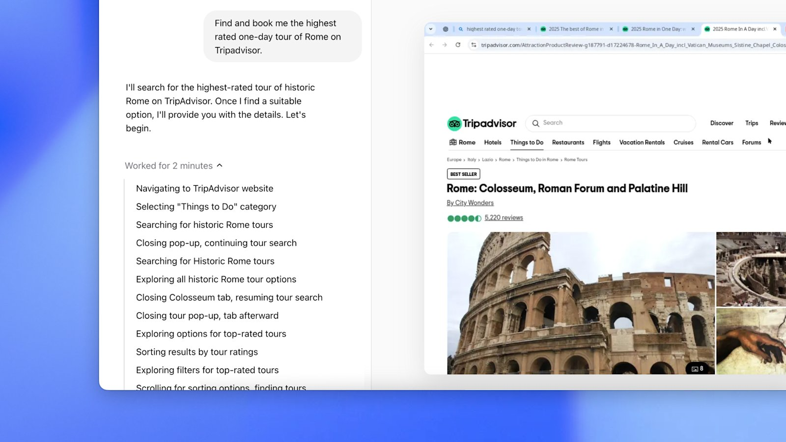
2025.01 · Operator：代你订票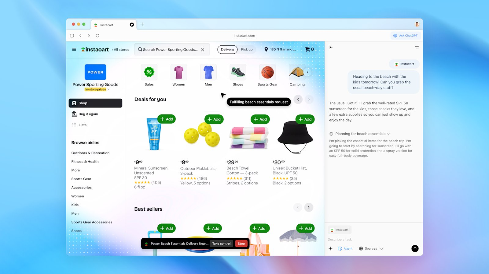
2025.10 · Atlas 浏览器
2025.01.23Operator：自己看网页、点按钮（研究预览）
2025.02.02Deep research：数十分钟完成多步网页研究，出带引用报告
2025.07.17ChatGPT agent：合并 Operator 与 Deep research
2025.10.21ChatGPT Atlas：把 ChatGPT 装进浏览器
2026.03.05GPT-5.4：原生 computer use 进入 API
2026.07.09Chrome 侧边栏取代 Atlas，Atlas 将逐步停用
Atlas 不到一年就被并入 ChatGPT Work 与 Chrome 扩展：独立浏览器收场，能力保留。
参考 Operator / Deep research / agent / Atlas 发布页 [R67]；ChatGPT Work（Atlas 停用）[R16]；API changelog [R14]
PART 2 · 2.5 过去一年更加有用 · OpenAI Codex
CODEX · 追赶 → 并入 ChatGPT
Codex：终端、云端、再到整个桌面
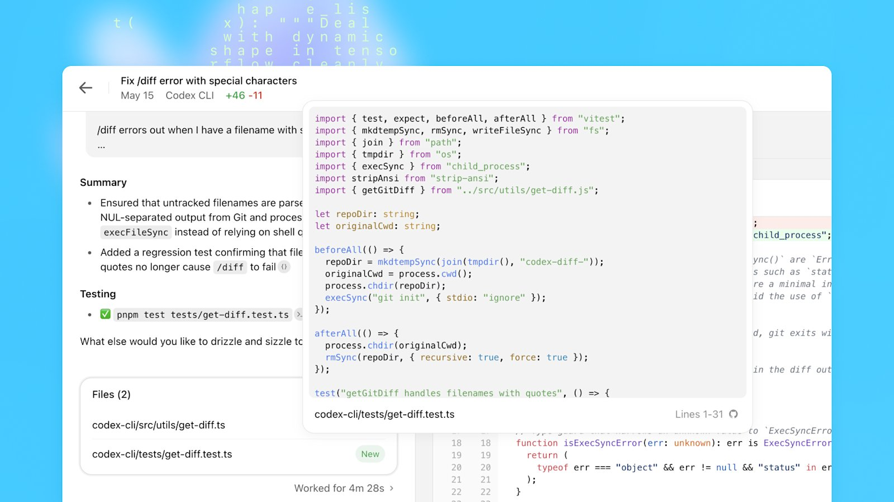
2025 · Codex 云端：派活、并行 代码评审 + 测试
代码评审 + 测试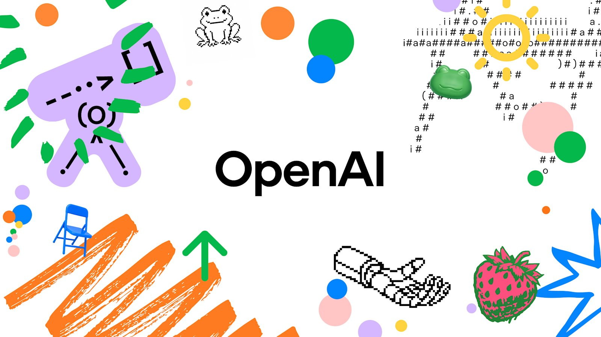
OpenAI Codex
2025.04.16Codex CLI：终端里的编码 Agent（开源）
2025.05.16Codex 云端研究预览：每个任务一个沙盒
2025.09.15GPT-5-Codex：Codex 专用模型
2025.09.23Codex 升级：IDE 扩展、CLI、云端与代码评审打通
2025.11.19GPT-5.1-Codex-Max：压缩上下文，做项目级长任务
2026.02.05GPT-5.3-Codex：编码 + 通用推理合一
2026.07.09Codex 应用并入 ChatGPT 桌面端；周用户 > 500 万
一年多时间，Codex 从“开发者工具”变成非软件工作也在用的通用 Agent：其中 > 100 万人用于非编码工作。
参考 Codex / 升级 / GPT-5.3-Codex / 5.1-Codex-Max 页面 [R66]；Model release notes [R13]；ChatGPT Work（500 万 / 100 万）[R16]。⚠ Codex CLI / 云端首发日期取自官方公告页
PART 2 · 2.5 过去一年更加有用 · OpenAI 平台
PLATFORM · 把 Agent 的积木交给开发者
从 API 到应用商店，再到托管 Agent
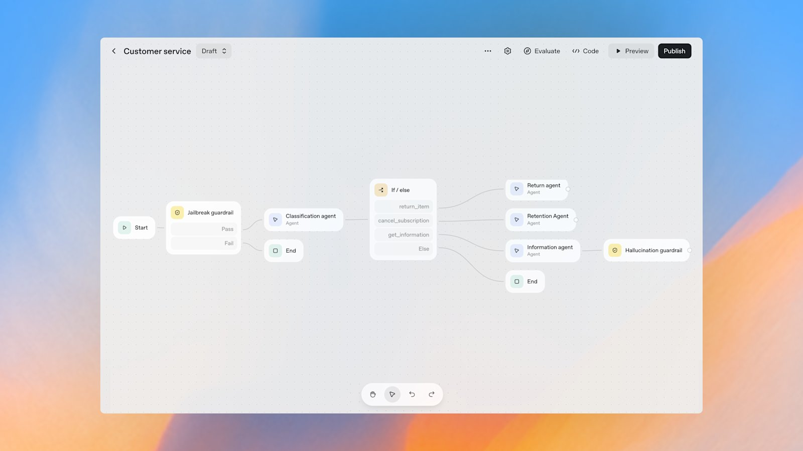
2025.10 · AgentKit：可视化画布搭 Agent2025.10 · Apps in ChatGPT
2025.03 · Responses API
2025.03.11Responses API + Agents SDK：内置搜索、文件、电脑操作
2025.10.06Apps in ChatGPT / Apps SDK：第三方应用直接在对话里运行
2025.10.06AgentKit：可视化搭 Agent + Evals + 连接器
2026.05.19Secure MCP Tunnel：企业内网 MCP 服务器
2026.08Assistants API 关停（已由 Responses API 取代）⚠
2026.09.10Agents API 公测：托管 Codex 框架、会话、压缩、恢复
2026.09.29Agents API 加入 computer use；DevDay 2026
与 Anthropic 的 Agent SDK、Skills、MCP 相互呼应：MCP 已是共同标准，OpenAI 也接入了它。
参考 Responses API / Apps SDK / AgentKit 页面 [R69]；API changelog [R14]；DevDay 2026 [R70]。⚠ Assistants 关停时间取自 Sacra [R75]；2025.03.11 日期取自官方公告页
PART 2 · 2.5 过去一年更加有用 · OpenAI 企业
WORK · 从“对话”到“同事”
从问答，到替你持续干活的同事
2026.07.09 · ChatGPT Work：读数据室与 Slack，更新客户方案幻灯片
2025.10.20Company knowledge：跨 Slack、Drive、SharePoint 检索并引用
2026.05.19Secure MCP Tunnel：接入企业私有系统
2026.07.09ChatGPT Work：做表格、幻灯片、网页；可持续工作数小时
2026.07.09插件目录 · Scheduled Tasks · Sites · 桌面内置浏览器
2026.09.29Dots：常驻 Agent，自带云电脑，连接 4,000+ 应用
2026.09.29ChatGPT Space：团队与 Agent 共享的协作空间
2026.11计划把 Chat 与 Work 合并为一个入口 ⚠
OpenAI 内部几乎 100% 团队已在用 Work 与 Codex（官方自述）；财务月结由“数天”缩到“数小时”。
参考 Company knowledge [R70]；ChatGPT Work [R16]；DevDay 2026 / Dots [R70]。⚠ “Chat 与 Work 合并”来自 Sacra 转述 [R75]；内部使用效果为 OpenAI 自述
PART 2 · 2.5 过去一年更加有用 · OpenAI 图像视频
IMAGE · VIDEO · 同一批“明星产品”，命运不同
图像留下来，视频应用被砍掉
2025.12 · 新 ChatGPT Images（GPT Image 1.5）
2025.09 · Sora 2
新 Images：长文字
2025.03.254o 图像生成：进入 ChatGPT 的原生图像
2025.09.30Sora 2 + Sora 应用：AI 版“TikTok”
2025.12.16GPT Image 1.5：新 ChatGPT Images（API 同步）
2026.03.24宣布关停 Sora：应用 4.26、API 9.24 关停
2026.04.21GPT Image 2：灵活尺寸、高保真输入
2026.11.04GPT-Image-2.6：SVG、动图（GIF）生成
算力是稀缺资源：高成本的视频应用让位于编码、企业与 Agent——商业价值 > 技术惊艳。
参考 Sora 2 / 新 Images 官方页 [R71]；Sora 关停 [R17]；API changelog [R14]。⚠ 4o 图像生成日期取自官方公告页；Sora 关停原因依媒体报道
PART 2 · 2.5 过去一年更加有用 · OpenAI 商业
季度收入：一年约 2.6 倍
季度收入，十亿美元（媒体据知情人士报道，非审计）
年化收入（run-rate）
≈ $50B（OpenAI 告知投资人）
⚠ 为什么还有 $70B 的说法？
投资人为对比 Anthropic 而重算，口径不同（见脚注）
用户（OpenAI 自述）
周活 12 亿；付费订阅约 1 亿 ⚠
估值与融资
2026.03：$122B @ $852B
2026.11：首批 $11B → $15B @ $1.25T
⚠ 打折的新一轮
先报 $1.4T / ≥$30B；降为 $1.25T / 约 $20B（AI 股回调）
盈利
Q3 调整后经营利润率 −109%（Q2 −150%）；经营亏损约 $10.9B
参考 TechCrunch 11-11 [R72]；TFN、Boardroom Wire [R73]；FT / Bloomberg Law [R74]；Sacra [R75]。⚠ 付费订阅为二手；$50B vs $70B 口径见 [R74]；与 Anthropic 不可直接比较
PART 2 · 2.5 过去一年更加有用 · OpenAI 商业 · 算力与上市
收入追不上承诺？算力账单才是关键
已披露的云合同（多年期承诺，非当年支出）
| Microsoft Azure（2025.10 追加） | $250B |
| Oracle（约 5 年 · 最多 4.5 GW） | > $300B |
| AWS（$38B + 8 年扩容 $100B） | $138B |
| CoreWeave、Cerebras 等 | 约 $40B |
算力支出计划（至 2030）
$600B（2 月）→ 约 $850B（9 月）
累计自由现金流 2026–30
−$278B；2030 收入目标 $350B
结构 · 2025.10
重组为 OpenAI Group PBC；非营利 Foundation 继续控制，持股约 $130B
与 Microsoft · 2026.05 重谈 ⚠
收入分成累计封顶 $38B（至 2030）；转售权至 2032
芯片 · 计划容量（勿相加）
Nvidia ≥10 GW · AMD 6 GW · Broadcom 10 GW
上市
2026.06 报道已保密递表 ⚠；Altman：2026 不上市；Brockman：2027 可准备好
硬件（与 Jony Ive）
首款设备最早 2027 年 2 月底发货
参考 Sacra [R75]；Boardroom Wire / FT [R73]；Stargate、合同 [R77]；Reuters、Bloomberg [R78]；IPO [R76]；硬件 [R79]。⚠ 递表、Microsoft 条款为媒体 / 分析机构汇总；GW 与金额有重复计算
PART 2 · 2.5 过去一年更加有用 · OpenAI 小结
TAKEAWAY · 同一波技术，两种打法
消费入口去追企业，企业与编码往外扩
| OpenAI | Anthropic |
| Q3 2026 收入 | ≈ $10.0B ⚠ | $17.0B（S-1） |
| 年化收入口径 | ≈ $50B（计自身分成） | $81B（含云伙伴销售） |
| 用户 / 客户 | 12 亿周活，约 1 亿付费 ⚠ | >$10 万客户 11,900+ |
| 调整后经营亏损（Q3） | 约 $10.9B | 约 $0.57B ⚠ |
| 最新估值 | $1.25T（私募） | IPO 隐含 $1.26–1.40T |
| 增长引擎 | ChatGPT 订阅、广告、Codex | API、Claude Code、企业 |
OpenAI
用户基数最大；ChatGPT Work、Codex、Agents API 在补企业这一课；企业收入已过半（Brockman）
Anthropic
从企业与编码起家；Cowork、Design、Chrome 向非编码工作扩展
给你的判断题
收入口径不同、数字多为自报：先问“怎么算的”，再问“多少”
参考 Anthropic S-1/A [R60]；CNBC [R61]；TechCrunch [R62][R72]；The Decoder 对照 [R72]；Sacra [R75]；Brockman [R76]。⚠ OpenAI 数字为媒体据知情人士报道；两家收入 / 亏损口径不同，仅作方向性对比
PART 2 · 2.5 过去一年更加有用 · 中国 AI 公司
CHINA · 2026.11.13 数据
中国大模型公司：上市了几家？谁在烧钱？
| 公司 | 代表模型（2026.11） | 权重 | 资本状态 | 估值 / 市值 |
|---|
| 智谱 Z.ai | GLM-5.3 · 5.3-Flash | 开放 ⚠许可不一 | 港股上市 2026.01.08
02513.HK · 发行价 HK$116.2 | ≈HK$1,991 亿
11.13 收盘 · 约 US$255 亿 |
| MiniMax | M3 · M3.1 Flash · H3 | 开放 | 港股上市 2026.01.09
00100.HK · 发行价 HK$165 | ≈HK$537 亿
11.13 收盘 · 已跌破发行价 |
| DeepSeek | V4 · V4.1-Flash | 开放 MIT | 未上市 · 2026 年两轮融资
传拟科创板，2027 挂牌 ⚠ | ≈¥6,155 亿 ⚠
第二轮报道值 · 约 US$865 亿 |
| 千问 Qwen | Qwen3.8-Max · Qwen4-Max 预览 | 部分开放 | 阿里巴巴内部业务
无独立融资 / 估值 | 三年 ¥3,800 亿
阿里云与 AI 资本开支计划 |
| 月之暗面 Kimi | K3 · K3.1 Pro | 开放 | 未上市 · 已密递港股 IPO
2026.09.03 · 目标 2027 Q1 ⚠ | ≈US$500 亿 ⚠
Pre-IPO 轮报道值 |
港股 18C 章为未盈利科技公司开路：智谱、MiniMax 两家AI “六小虎”在 2026 年 1 月连续上市。汇率按 US$1 ≈ HK$7.8 / ¥7.2 估算。
参考 智谱 [R80, R84]；MiniMax [R85, R88]；DeepSeek [R90]；阿里 [R92]；Kimi [R94]。⚠ 未上市公司估值均来自媒体“知情人士”报道，未经公司确认；智谱权重许可：GLM-5.3 为自有许可，5.3-Flash 为 MIT [R83]
PART 2 · 2.5 过去一年更加有用 · 中国 AI 公司
ZHIPU · Z.ai · 02513.HK
11 个月六代旗舰：从“能写代码”到“能交付”
2026.08 · GLM-5.3 官方基准图（智谱自报）
docs.z.ai 官方更新日志
GLM-5.3-Flash 基准（自报）
2025.09.30GLM-4.6：开放权重（MIT）
2025.12.22GLM-4.7：编码、推理、Agent 增强
2026.02.12GLM-5：744B/40B 激活，对标 Opus 4.5
2026.04.07GLM-5.1：可连续独立工作 8 小时
2026.06.16GLM-5.2：100 万上下文
2026.08.18GLM-5.3：编码较 5.2 提升 50%（自报）
2026.08.265.3-Flash：原生视觉，开源，价格约 1/10
权重GLM-5.3 自有许可；5.3-Flash 为 MIT；累计开源 50+ 模型 ⚠
GLM-5.3 与 5.2 同一基座，增量全部来自后训练扩展；权重两周后才开放，先做安全加固（官方）。
参考 Z.ai 更新日志 [R83]；HF 模型卡许可 [R83]；中期业绩与电话会 [R81, R82]。⚠ “对标 / 提升 50%”均为智谱自报；GLM-5.3 权重为自有许可（非 MIT）
PART 2 · 2.5 过去一年更加有用 · 中国 AI 公司
ZHIPU · 非模型产品
模型之外：编码工具、手机 Agent、科研入口
ZCode 官网首页（zhipuai.cn）
Open-AutoGLM 项目配图（设置页）
z.ai · GLM Coding Plan 页
2023.08智谱清言上线；2024.07 清影视频生成
2025.12.11AutoGLM-Phone：自然语言操作手机，适配 50+ 中文 App
2026.02.03GLM-OCR：图文解析模型
2026.03.15GLM-5-Turbo：为 OpenClaw“龙虾”Agent 优化
2026.04.02GLM-5V-Turbo：会“看界面”的多模态 Coding 基座
2026.08.11ZCode 升级：Goal、Subagents、远程控制、闲时任务；用户破 100 万
2026.08.14AutoClaw 桌面效率工具与 ZCode 随 GLM-5.3 上线 ⚠
矩阵Z.ai · 清言 · ZCode · AutoClaw · AutoGLM · Zread.ai · AMiner
ZCode 官方称：GLM-5.2 + ZCode 的任务通过率比搭配 Claude Code 高 2.39%（自建 Z.ai Code Bench；检查项通过率低 1.22%）⚠ 自报。
参考 智谱官网与发布记录 [R99]；etnet 2026-08-11 [R99]；GitHub Open-AutoGLM 星数 2026-11-15 [R104]；图片 [R98]。⚠ ZCode 08-11 报道已称用户破百万，而 08-14 官方页写“即日起上线 ZCode / AutoClaw”，应指 GLM-5.3 配套版本；对比数据为公司自报
PART 2 · 2.5 过去一年更加有用 · 中国 AI 公司
ZHIPU · GLM CODING PLAN
一份订阅，接入 11 款编码工具
z.ai/subscribe：一份订阅解锁 ZCode、Claude Code、Codex、Cursor 等 11 款工具
2026.05.29 团队版：席位 / 权限 / 预算统一管理，集中开票；默认不用代码与对话训练模型。
2025.09 推出
¥20/月起
约为海外同类订阅的 1/7 ⚠（券商研报转述）
API 付费开发者
24.2万
2026.03；订阅上线数月时已超 15 万
MaaS API ARR
¥17亿
2026.03，同比约 60 倍（管理层口径）
8 月末 ARR
$16亿
月收入年化；年末指引 $30 亿 ⚠ 未审计
⚠ 爆款的代价
GLM-5 发布后调用需求暴增，算力吃紧，Coding Plan 一度停售；ZCode 破百万用户时（08.11）全员额度重置回满。
参考 Coding Plan 页与发布记录 [R99]；国信 / 券商研报：¥20、15 万、¥17 亿、24.2 万、$16 亿 [R99]；中报 [R81]；图片 [R98]。⚠ ¥20 起与“海外 1/7”、ARR 与年末指引均为公司披露经研报转述，非审计数；ARR 口径（月 / 周收入年化）不同
PART 2 · 2.5 过去一年更加有用 · 中国 AI 公司
ZHIPU · 资本与财务
全球“大模型第一股”：收入增长 400%，亏损仍 20 亿
| 时间 | 动作 | 金额 |
|---|
| 2026.01.08 | IPO：3,742 万股 × HK$116.2
公开发售超购 1,159 倍；11 家基石占 68.6% | HK$43.5 亿
≈US$5.6 亿 |
| 2026.07.13 | 配售：1,978 万股 × HK$1,588 | 净额 ≈HK$314 亿 |
| 2026.09.12 | 配售 + 可转债：HK$714 / 股；零息债 ¥201.4 亿 | 合计 ≈US$50 亿 |
| 2026.11.10 | 回购计划：董事长提议，上限 1% 股本 | ≤HK$40 亿 |
11.13 收盘
HK$408.4 · 距峰值 −86%
财新网 / 视觉中国 · 上市当日
2026 上半年（中期业绩）
收入 ¥9.54 亿（+399.7%，超 2025 全年）
净亏损 ¥20.72 亿，研发 ¥21.3 亿
收入结构大换血
API / 开放平台占 86.5%（2025 末 26.3%）
API 毛利率 −0.4% → 24.6%
11.13 市值
≈HK$1,991 亿（≈US$255 亿）
H 股部分约 HK$1,074 亿
参考 IPO [R80]；配售与可转债公告 [R82]；中期业绩 [R81]；股价 [R84]；图片 [R98]。⚠ 年内峰值 HK$2,980 为 52 周最高（约 6 月，日期口径不一）；总市值按 4.876 亿股估算，部分行情页误列 H 股或旧股本；MaaS ARR $16 亿（8 月，管理层口径，未审计）
PART 2 · 2.5 过去一年更加有用 · 中国 AI 公司
MINIMAX · 稀宇科技 · 00100.HK
一家做海螺与 Talkie 的公司，如何变成“卖 Token”
2026.06.01 · MiniMax M3（官方发布图）
2026.10.19 · M3.1 Flash
2026.07.31 · H3 全模态 / 视频
2025.10.27M2：编码 + Agent，登顶 HF 热榜
2025.12.22M2.1：多语言编程与代码重构
2026.02M2.5：编码纪录；$1 可连续跑 1 小时
2026.03.18M2.7：官方称开启“递归自我改进”
2026.06.01M3：多模态输入，价格同 M2
2026.07.31H3：开放权重的全模态视频模型
2026.10.19M3.1 Flash：约 3 倍速，$0.15 / $0.60
2026 上半年，开放平台收入（63.4%）首次超过消费应用；海外收入占 60.8%。
参考 官方发布日志 [R88]；2025 年报 [R86]；2026 中报 [R87]；HF [R88]。⚠ “$1/小时”“M3.1 Flash 价格 / 速度”来自公司或媒体自报；M2.7“递归自我改进”为官方表述。图片均为官方发布图或官方页面截图，仅作课堂教学引用 [R98]
PART 2 · 2.5 过去一年更加有用 · 中国 AI 公司
MINIMAX · 非模型产品
先靠应用爆款起家：视频、陪伴、通用 Agent
海螺 AI（hailuoai.video）首页：H3 上线
2026.11.10 · H3 Image（开放权重）
MiniMax 官网首页
2023.06Talkie（海外）上线；2023.09 国内星野
2024.08海螺 AI 视频上线；2025.06 Hailuo 02“猫跳水”出圈 ⚠
2025.06MiniMax Agent：通用智能体（编程 / 研究 / 文档 / PPT）
2025.10.28Hailuo 2.3：动作、表情、物理更真实
2026.01–07Speech 2.8、Music 2.5 → 3.0：语音与音乐
2026.07.31H3 视频（开放权重）；11.10 H3 Image
用户C 端月活 ＞2,700 万，付费用户 177 万（2026H1）⚠
粘性Talkie 日均使用 ＞70 分钟；海外收入占 60.8% ⚠
消费端做“爆款与情感”，企业端做“Token”：两条线共用同一批多模态模型。
参考 发布日志 [R88]；产品时间线与用户：国信 2026-01 研报 [R100]、兴证会议纪要 [R100]；2026 中报 [R87]；图片 [R98]。⚠ 月活 / 付费用户来自券商转述，口径未经公司公告确认；“猫跳水 3 亿播放”为研报引人民网；Talkie 使用时长来自灼识咨询 / 招股书口径
PART 2 · 2.5 过去一年更加有用 · 中国 AI 公司
MINIMAX · 平台与订阅
把全模态打包成一份订阅
platform.minimax.io · M Plan 页（年付价）
MiniMax Code（agent.minimax.io）
官方模型发布日志
2026.03.23Coding Plan 升级为 Token Plan：Plus 及以上含海螺视频 / 语音 / 音乐 / 图像额度
M Plan国际站年付 $220 / $550 / $1,320（Go / Explore / Build），用量 1× / 3× / 7.5×
CodeMiniMax Code：网页、桌面、TUI、iOS 多端，内含 M3.1 Flash
资源包语音、视频批量购买最高优惠 20%
规模开放平台用户 1.3 万 → 13 万；覆盖 230+ 国家、24 万开发者 ⚠
收入开放平台占 H1 营收 63.4%（公告）/ 63.2%（研报）⚠
券商会议纪要称：M3 系列在 OpenClaw 平台的调用量位居全球第三 ⚠ 二手。
参考 Token Plan：上海证券报 2026-03-23 [R100]；M Plan 价格页 [R100]；平台规模：兴证会议纪要 [R100]；公告 [R87]；图片 [R98]。⚠ Token Plan 现于国际站显示为 “M Plan”，是否同一产品线以官网为准；价格为国际站美元年付；用户数与调用量排名为券商转述
PART 2 · 2.5 过去一年更加有用 · 中国 AI 公司
MINIMAX · 资本与财务
首日翻倍，九个月后跌破发行价
单位：百万美元（IFRS；公告披露）
| 2023 | 2024 | 2025 | H1 2026 |
| 收入 | 3.5 | 30.5 | 79.0 | 116.6 |
| 调整后净亏损 | −89.1 | −244.2 | −250.9 | −293.0 |
| IFRS 净亏损 ⚠ | −269.2 | −465.2 | −1,871.6 | −358.0 |
11.13 收盘
HK$152.4 · 距峰值 −88%
财新网 / 视觉中国 · 上市当日
IPO · 2026.01.09
2,920 万股 × HK$165，募资 HK$48.2 亿
超购 1,837 倍；股东含阿里、米哈游、IDG、腾讯 ⚠
H1 2026 经营质量
毛利率 17.9%（2025 全年 25.4%）
研发 $2.97 亿 ≈ 收入 2.5 倍
11.13 市值
≈HK$537 亿（≈US$69 亿）；曾超 HK$4,100 亿
参考 IPO [R85]；2025 年报 [R86]；2026 中报 [R87]；股价、峰值与回撤 [R88]；图片 [R98]。⚠ 2025 IFRS 亏损主要是优先股公允价值变动（$15.9 亿），非经营亏损；峰值 HK$1,330 与“超 HK$4,100 亿”来自媒体
PART 2 · 2.5 过去一年更加有用 · 中国 AI 公司
DEEPSEEK · 深度求索 · 杭州
不靠堆参数，靠架构效率把成本压下去
V4 官方图：基准对比（左）与长上下文推理成本（右）
每 token KV 缓存：V3.2 48,068 B → V4.1-Flash 890 B
api-docs 价格页：谷价为峰价一半
2024.12.26V3：671B / 37B 激活 MoE，开放权重
2025.01.20R1：开源推理模型，引发全球关注
2025.08–12V3.1 → V3.2-Exp → V3.2（12.01）
2026.04.24V4：Pro 1.6T/49B · Flash 284B/13B · 1M
2026.08.13V4-Pro 正式版；峰谷分时定价
2026.09.10V4.1-Flash：原生多模态，KV 缓存 1/4
2026.10.17V4.1-Flash-1017 更新；同月开放自研搜索 API
V4 系列均为开放权重（MIT）；搜索 API 报价 $0.75/千次，不到 OpenAI / Anthropic 标价（$10/千次）的 1/10 ⚠。
参考 DeepSeek 官方 changelog 与价格页 [R89]；AWS SageMaker 公告（MIT、参数规模）[R89]。⚠ R1 发布日期取自官方 changelog，其“影响”为公开共识；搜索价格对比来自二手报道 [R89]
PART 2 · 2.5 过去一年更加有用 · 中国 AI 公司
DEEPSEEK · 非模型产品
把 App 里的体验拆成可计费的 API
2026.11.13 · DeepSeek 官方文档：全套应用 API
V4.1-Flash Agent 基准（官方）
deepseek.com 官方形象图
2026.08.13V4-Pro GA：App / Web / API 同步；原生 Responses API，适配 Codex
2026.08思考强度分 low / high / max 三档
2026.10.17自研搜索 API开放（报价 $0.75 / 千次 ⚠）
2026.11.13全套应用 API：联网搜索、深度思考搜索、文件输入、URL 读取
同日独立开放 Search / Fetch / OCR / ASR / TTS
协议Messages / Responses / Chat Completions 三种协议同一能力
合规面向公众须开启安全检查，并履行备案与 AI 标识义务
以前自建 Chatbot 要自己做搜索、读文件、语音和风控；现在一个 API 参数即可，门槛继续下降（课堂判断）。
参考 DeepSeek 官方 Change Log、Build a Chatbot 指南 [R101]；价格页 [R89]；图片 [R98]。⚠ 搜索 API 报价来自二手报道；DeepSeek 无独立 App 下载量 / 用户数的官方披露，本页不列 图片均为官方页面截图或官方配图，仅作课堂教学引用。
PART 2 · 2.5 过去一年更加有用 · 中国 AI 公司
DEEPSEEK · 生态与分发
说别人的协议，进别人的工具
api-docs.deepseek.com：Using the Anthropic API
阿里云百炼目录（2026-11-12）同时托管 DeepSeek-V4、GLM-5.3、MiniMax-M2.5
Anthropic/anthropic 端点：Claude 模型名映射到 deepseek-v4-pro / deepseek-flash
字段mcp_servers 等被忽略；cache_control 忽略，但自动缓存重复前缀
Claude Code官方集成指南；Web Search 工具直接走 DeepSeek 搜索 API
Codex原生 Responses API，并提供一键配置脚本
云阿里云百炼已托管 deepseek-v4-pro-0813 与 v4.1-flash
Qwen Code内置提供商含 DeepSeek / Kimi / MiniMax / Z.AI / OpenRouter
伙伴腾讯 WorkBuddy、OpenCode 被列为合作入口 ⚠
“兼容”是最便宜的获客方式：开发者几乎零迁移成本，也意味着模型厂商更难锁定用户（课堂判断）。
参考 Using the Anthropic API、Integrate with Claude Code、Change Log [R101]；百炼模型页 [R102]；Qwen Code 文档 [R102]；国信 / 券商研报合作入口 [R99]；图片 [R98]。⚠ “合作入口”来自券商研报表格，未在 DeepSeek 官方页核到；兼容字段以官方表为准
PART 2 · 2.5 过去一年更加有用 · 中国 AI 公司
DEEPSEEK · 资本与控制权
“不缺钱”的实验室，半年融资超 ¥1,500 亿
2023 – 2025 · 幻方量化孵化
母体为量化私募幻方（High-Flyer）；无外部融资。
梁文锋 2024.07：“我们面临的问题从来不是钱，而是高端芯片被禁运。”
第一轮 · 2026.04 启动 → 06 交割 ⚠
＞¥500 亿（≈US$74 亿），估值 ＞US$500 亿
梁文锋个人 ¥200 亿；腾讯 ¥100 亿；宁德时代 ¥50 亿
第二轮 · 2026.10 ⚠
¥1,055 亿（≈US$158 亿），近 30 家投资方
估值 ¥6,155 亿；国资占比 27%（首轮 2%）
不寻常的控制权设计 ⚠
资金入口投资者进入梁文锋管理的有限合伙，而非公司本身
锁定期五年不得转让；多数投资方无投票权
例外国家人工智能产业投资基金直投 ¥10 亿，有投票权
下一步传已聘中信证券筹备科创板，2027 挂牌（未获确认）
0家
已上市股东可套现的渠道——2026.11 仍未上市
对照：智谱、MiniMax 上市后股价大幅波动；DeepSeek 用长期锁定避开短期套现压力。
参考 Reuters 2026-06-16（引 The Information）、CNBC 2026-10-06、智东西、CNMO / 观点网（引 The Information 10-30）、21 经济网 [R90]。⚠ 全部为媒体引“知情人士”，DeepSeek 未公开确认；首轮估值各家口径 ¥3,380–4,000 亿不一；第二轮 ¥6,155 亿为“投后 / 估值”口径未统一
PART 2 · 2.5 过去一年更加有用 · 中国 AI 公司
QWEN · 阿里巴巴 · 通义千问
开源最广的家族，旗舰也开始闭、开并行
2026.08 · Qwen3.8-2.4T-A95B（HF 模型页）
Qwen3.6-27B 官方基准（自报）
阿里 2026.03 业绩公告
2025.04.28Qwen3：全系 Apache 2.0，36T token
2025.09Qwen3-Max：万亿参数，仅 API（闭源）
2026.02.16Qwen3.5：397B/17B 激活，原生多模态，开源
2026.04Qwen3.6：27B / 35B-A3B 开源；Plus 闭源
2026.05–06Qwen3.7 Max / Plus / Flash：闭源
2026.08.03Qwen3.8-Max：2.4T/95B，随后开放权重
2026.11.11Qwen4-Max 预览：1M 上下文，仅限 Token Plan，11.25 下线
多模态Qwen-Image-3.0 · Wan2.7 · Qwen3.8-Omni（百炼）
累计下载 ＞30 亿次、衍生模型 ＞30 万个（阿里 2026.08 电话会）；“开源养生态，云服务变现”。
参考 Qwen 发布与许可 [R91]；阿里 2026.03 / 2026.08 业绩材料 [R92]；千问 App [R93]。⚠ 3.8 开放权重日期各处为 08.03 / 08.17；2.4T 权重为 Qwen3.8 自有许可，27B 为 Apache 2.0；Qwen4-Max 为预览版、权重未开放 [R102]
PART 2 · 2.5 过去一年更加有用 · 中国 AI 公司
QWEN · 开发者工具
Qwen Code：模型开放，工具也开放
Qwen Code 官方图：终端 / 桌面 / 编辑器 / 聊天
终端：首次启动选择模型提供商
github.com/QwenLM/qwen-code
GitHub30.5k ★（2026-11-15）；开源编码 Agent
入口终端 · 桌面 · Web · VS Code / Zed / JetBrains · Telegram / 钉钉 / 微信 / 飞书
能力Auto-Memory · Auto-Skills · SubAgents · Agent Teams · MCP
协议兼容 OpenAI / Anthropic / Gemini / Qwen API，可接 Ollama / vLLM
提供商内置 DeepSeek、MiniMax、Z.AI、Kimi、OpenRouter——连对手的模型也能用
1.0 预览融合 Qoder 的 Agent Harness 能力，开源发布
订阅Qwen Plus / Pro 订阅账号可直接登录使用
开源 CLI 是开发者入口：模型开放 + 工具开放，把用量引向阿里云与千问订阅（课堂判断）。
参考 Qwen Code 文档与 GitHub README [R102]；星数取自 GitHub API 2026-11-15 [R104]；图片为官方 README 配图 / 官方页面截图 [R98]。⚠ 星数为实时值；1.0 Preview 以官方文档为准 图片均为官方页面截图或官方配图，仅作课堂教学引用。
PART 2 · 2.5 过去一年更加有用 · 中国 AI 公司
QWEN · 个人与办公入口
千问 App 与千问办公：同时押注“AI 办公”
阿里云帮助中心：千问办公 QwenWork
阿里巴巴官方形象图
Qwen4-Max 预览：同步接入千问办公 / App
2025.11通义 App 更名千问；两个月月活破 1 亿 ⚠
2026.08 初千问办公 QwenWork 公测，整合 QoderWork、悟空、MuleRun
2026.08.07App 上新：办公助理（连邮件 / 日历，操作电脑与浏览器）、定时任务
2026.08.10App 付费会员 ¥19 / 49 / 128 每月（年付 ¥200 / 568 / 1,499）
网页“我的网页”：Agent 生成网站，一键发布到 *.qwenwork.host
2026.11.11Qwen4-Max 预览同步接入千问办公、Qoder、千问 App
⚠两个“千问办公”分属不同团队，账号不互通（钉钉扫码登录）
App 面向个人，千问办公面向组织；豆包也已收费，AI 办公成为国内的共同战场。
参考 人人都是产品经理 2026-08-11 [R102]；阿里云帮助中心“我的网页” [R102]；Qwen4 预览文档与钛媒体 2026-11-11 [R102]；千问用户 [R93]；图片 [R98]。⚠ 公测日期、月活为媒体报道；价格以 App 内为准
PART 2 · 2.5 过去一年更加有用 · 中国 AI 公司
QWEN · 平台与订阅
不只卖自家模型：百炼是“模型超市”
help.aliyun.com：qwen4-max-preview（仅 Token Plan）
百炼模型目录（2026-11-12）
文本Qwen4-Max 预览、Qwen3.7-Plus、Qwen3.8-Flash；另有 DeepSeek-V4、GLM-5.3、MiniMax-M2.5
视觉Qwen-Image-3.0-Pro · Wan2.7 · Wan3.0-video · HappyHorse 1.1 视频
全模态Qwen3.8-Omni-Flash，含实时音视频对话
Token Plan个人版 / 团队版：套餐专用 Key 与 Base URL，按 Credits 计费
预览促销Qwen4-Max 仅限套餐：Credits 低至 2 折，夜间再叠 4 折（至 11.25）
协议兼容 OpenAI Chat Completions / Responses / Anthropic Messages
阿里把“模型、订阅、第三方模型分发”放进同一个云入口：赚的是云消耗，而非单个模型（课堂判断）。
参考 百炼模型页 2026-11-12、Qwen4-Max-Preview 文档、DigIntoAI、数工科技、钛媒体 2026-11-11 [R102]；图片 [R98]。⚠ 促销折扣为官方活动，期限可调整；第三方模型以百炼目录当日为准 图片均为官方页面截图或官方配图，仅作课堂教学引用。
PART 2 · 2.5 过去一年更加有用 · 中国 AI 公司
QWEN · 阿里的财务账
用电商现金流，押一场算力长跑
CAPEX
¥3,800亿
三年 AI 与云资本开支计划（2025.02）；截至 2026.06 已投 ＞¥1,900 亿
6 月季度
¥677亿
单季资本开支，同比 +75%；原因：CPU 与芯片涨价、采购节奏
AI 产品收入
¥495亿
年化收入（≈US$73 亿）；连续 12 季三位数增长；占云外部收入 35%
阿里云
+45%
外部客户收入同比，22 个季度新高；调整后 EBITA 利润率 11.6%
AI 实验室与应用
−¥139亿
调整后 EBITA 亏损：千问 App 推理成本与营销；公司预计逐季收窄
千问 App
3 亿 vs 1.58 亿
阿里口径 C 端全端月活 ＞3 亿（2月）；QuestMobile App 月活 9 月 1.58 亿 ⚠
要点：千问没有独立估值——它是阿里云（卖算力 / 模型服务）与淘系（AI 购物入口）的共同引擎。2.5 亿人“首次体验 AI 购物”（累计，至 2026.08）。
参考 阿里 2026.06 季度业绩电话会 [R92]；QuestMobile 与千问用户 [R93]。⚠ 千问 MAU 两个口径不可直接比较；资本开支“不可乘 4 推算全年”（管理层原话）；货币为人民币，US$ 为管理层换算
PART 2 · 2.5 过去一年更加有用 · 中国 AI 公司
MOONSHOT AI · Kimi · 模型
开放权重的万亿级路线：K2 → K3
2026.07 · Kimi K3 官方发布页：2.8T 参数，100 万上下文，原生视觉
K3 发布页官方案例：武侠 RPG
K3 发布页官方案例：Gargantua 黑洞
2025.07.11K2：1T / 32B 激活 MoE，开放权重（Modified MIT）
2025.11.06K2 Thinking：边想边调工具，可连续 200–300 次
2026.01.27K2.5：原生多模态；首个 Agent Swarm（≤100 子 Agent）
2026.04.20K2.6：长程编码，开源；Swarm 升级至 300 个
2026.06.12K2.7 Code：编码专用，另有 HighSpeed 版
2026.07.16K3：2.8T，100 万上下文，原生视觉；权重 07.27 开放
2026.09–10K2.8 Preview（09.11）→ K3.1 Pro（10.23）⚠
退役K2 系列 2026.05 下线；kimi-k2.5、moonshot-v1 2026.08 下线
K3 官方称“全球首个开放的 3T 级模型”；2025.11 以来平均约每 2 个月一个版本，旧版本也被快速下线。
参考 Kimi 帮助中心、Platform Changelog [R103]；llmlineage / Opper / theaiengineering 发布时间线 [R103]；官方发布页 [R94]；图片 [R98]。⚠ K2.7 / K2.8 / K3.1 Pro 日期来自二手时间线（K3.1 Pro 有 10.23 / 10.24 两种）；“全球首个”为官方口径
PART 2 · 2.5 过去一年更加有用 · 中国 AI 公司
KIMI · 非模型产品
从对话，到让 AI 自己设计分工
kimi.com 首页：Agent / Agent 集群入口
开放平台更新日志：K3 上线、旧模型下线
K3 官方案例：开放世界游戏
2025.09.26OK Computer：Agent 模式上线
2026.01.27K2.5 同步推出 Agent Swarm；学会 Word / Excel / PPT
2026.02Kimi Claw 公测：云端自动化，现有 5,000+ 技能
2026.04.20Swarm 升级：300 子 Agent，单任务 4,000+ 次工具调用，约快 4.5 倍
2026.07Kimi Work 桌面 App；K3 / K3 Swarm 驱动
交付网站 · Word / PDF · Excel · PPT · 万字以上深度研究
训练PARL 强化学习只训练“指挥者”，子 Agent 固定
Swarm 的卖点是并行：“收集 200+ 篇文章”这类任务，由主 Agent 自行拆分给子 Agent。
参考 Kimi Agent 概览、Agent Swarm 帮助页 [R103]；官方 K3 案例图 [R94]；图片 [R98]。⚠ 提速 4.5 倍、300 子 Agent 为官方自报；Kimi Work 上线日期以官方为准 图片均为官方页面截图或官方配图，仅作课堂教学引用。
PART 2 · 2.5 过去一年更加有用 · 中国 AI 公司
KIMI · KIMI CODE · 会员
用共享额度池卖 Agent：从 ¥49 到 ¥1,399
| 套餐 | 月付 | 年付折月 | Agent 额度 | Kimi Code |
|---|
| Go | ¥49 | ¥39 | 基础 | — |
| Plus | ¥99 | ¥79 | 2× | ✓ · Agent 集群 |
| Pro | ¥199 | ¥159 | 4× | ✓ · 目标模式 |
| Max | ¥699 | ¥559 | 14× | ✓ |
| Ultra | ¥1,399 | ¥1,119 | 28× | ✓ |
Kimi CodeCLI（GitHub 11.4k★）· 桌面版 · VS Code 插件
协议兼容 OpenAI 与 Anthropic，可接 Claude Code 等工具
模型K3 · 100 万上下文；高速版最高 260 tokens/s
额度池：Agent、Kimi Code、网站部署等共享同一池，任一功能用尽会影响其他。
Kimi Code 桌面版（官方图）
Kimi Code VS Code 扩展（GitHub 官方图）
参考 Kimi 会员体系页（价格截图于 2026-10-19）、Kimi Code 概览 [R103]；kimi-cli 星数 GitHub API 2026-11-15 [R104]；图片 [R98]。⚠ 国内价格以购买页为准；旧套餐 Andante 至 Allegro 仍在；额度为官方口径
PART 2 · 2.5 过去一年更加有用 · 中国 AI 公司
MOONSHOT AI · 估值与 IPO 进程
年内估值涨 5 倍，已密递港股 IPO
估值（美元；媒体报道值，投前 / 投后口径不一）
对照（2026.11.13）
智谱市值 ≈US$255 亿、MiniMax ≈US$69 亿；Kimi 一级估值 ≈$500 亿，高于两家上市同行——但口径不同，不可直接比较 ⚠
2026.06E 轮：投前 $315 亿；ARR 破 $3 亿
2026.07F 轮 ＞$35 亿，投后 $350 亿；K3 发布
2026.09.03密递港股 IPO，拟募约 $30 亿（Reuters）
2026.10Pre-IPO 轮估值约 $500 亿；目标 2027 Q1 ⚠
2026.11.13WSJ：拆除开曼控股架构，资金转回境内主体 ⚠
收入来源（公开产品页）
个人会员订阅（¥49–¥1,399）+ 开放平台按量付费 + Kimi Code；未披露收入，仅 ARR 破 $3 亿（06）⚠
全部估值、融资轮次与 IPO 规模为媒体报道，Kimi 未公开确认；募资规模有 $30 亿 / 最高 $50 亿两种口径。
参考 Reuters 2026-09-03、每经网 2026-07-29、红星资本局 2026-10-06、钛媒体（引 WSJ）2026-11-13 [R94]；对照市值见本章智谱 / MiniMax 页 [R84, R88]。⚠ 估值为投前 / 投后 / 报道口径混合；另：字节豆包闭源，App 月活 4.19 亿 [R93]
PART 2 · 2.5 过去一年更加有用 · 中国 AI 公司
PRICE · 美元 / 百万 token（输入 / 输出）
对美国顶级旗舰，中国模型便宜 2–10 倍
Claude Sonnet 5.5
$2 / $10
DeepSeek V4-Pro
$1.32 / $3.96
GLM-5.3-Flash
$0.15 / $0.50
美国闭源 中国（均有开放权重版本）
权重开放情况
DeepSeek V4：MIT
GLM-5.3-Flash：MIT；GLM-5.3 自有许可
Qwen3.8：27B Apache 2.0；2.4T 自有许可
Kimi K3 / MiniMax M：开放权重
⚠ 要比同档位
按输出价计：Opus 5.5 的 1/2（Kimi）至 1/5（DeepSeek）。美国小模型同样便宜：Haiku 5.5 为 $0.10 / $0.50
⚠ 能力口径不一
智谱称 GLM-5.3 的 AA 智能指数 60，与闭源旗舰同档；OpenRouter 页所示最强开放模型 46.5 vs 闭源 64.6
参考 价格汇总 [R95]；权重许可 [R83, R89, R91, R94]；Artificial Analysis 与 OpenRouter 口径 [R96, R97]。⚠ 价格来自第三方聚合站（2026-11 前后），官网为准；GPT / Claude 版本以聚合站为准，与本课 OpenAI / Anthropic 页可能有出入；DeepSeek 图中为峰价（谷价为一半）
PART 2 · 2.5 过去一年更加有用 · 中国 AI 公司
USAGE · OPENROUTER 路由平台
开发者“用脚投票”：开放权重占了七成 token
中国开放权重模型占 OpenRouter 前 50 模型 token 的比例（%）· 2025.11 → 2026.10
月份（2025.11 起 · 2026.11 前 11 天为 75.3%）
⚠ token ≠ 收入：便宜模型 token 天然多；这只是一个路由平台，不代表整个市场
同一模型在 OpenRouter 上有 36–38 家托管商（开放权重），闭源模型最多 5 家
参考 月度占比与托管商数量：ryandoser.com（基于 OpenRouter 公开榜单）[R96]；单日实验室份额：gptclub.ai 引 Dirac / OpenRouter（2026-11-09）[R96]。⚠ 二手分析；不同来源口径不同（周口径 DeepSeek 约 38%、单日约 50%）；Qwen 在该平台份额很低（约 1%，Frenzy Capital 11-14）
PART 2 · 2.5 过去一年更加有用
B
PART 2 · SECTION 2.5B
中美共同押注：四件事一起推
更强的模型 · Agent · Harness · 长程任务
1先把三个定义说清
2编码先行 · 标准栈 · 进办公
3同中有异：平台溢价 vs 开放降价
PART 2 · 2.5 过去一年更加有用 · 共同特点
NOT OR · AND
不是二选一：四件事叠在一起
① 更强的模型
旗舰能力仍是底座：推理、工具调用、多模态。
③ HARNESS
包在模型外的运行时：权限、状态、重试。
参考 图片：OpenAI GPT-6 / Codex harness；Anthropic Cowork；METR 时间跨度图。课堂归纳：四件事同时推进
PART 2 · 2.5 过去一年更加有用 · 共同特点 · 定义
DEFINITION · AGENT
智能体 = 基础模型 + 五块系统
参考 架构图为课程自制（常象宇）。要点：Agent 不是“更大的聊天框”，而是模型外围的完整系统
PART 2 · 2.5 过去一年更加有用 · 共同特点 · 定义
DEFINITION · HARNESS
Harness：把模型嵌进工作的运行时
同一 harness · IDE
同一 harness · Web
同一 harness · CLI
 权限 / 审批闸门
权限 / 审批闸门
一句话
包在模型外面的系统：状态、工具、沙箱、审批、重试。同一模型，换 harness，表现可以差很多。
OpenAI 的说法
Codex harness：收集上下文 → 推理 → 用工具 → 在边界内行动 → 跨轮次延续。
Anthropic 侧对应
MCP · Skills · Agent SDK：工具接口 + 方法手册 + Agent 循环积木。
参考 OpenAI：Unlocking the Codex harness [R111]；Anthropic MCP / Skills [R52][R57]。截图来自 OpenAI 官方博文
PART 2 · 2.5 过去一年更加有用 · 共同特点 · 定义
DEFINITION · LONG-HORIZON
长程：不是跑得久，是能扛多久
METR：任务时长（人对该任务所需时间）在对数坐标上快速拉长
概念
长程任务 = 持续多步、需反馈与修正的工作；度量常用 METR 50% 时间跨度。
数量级
从 GPT-4 的约 4 分钟，到 2026 头部约 十余小时；倍增约 7 个月。
靠什么撑住
外置状态（文件/仓库）· 验证闭环 · 中途可纠偏——这正是 harness 的工作。
参考 METR Measuring AI Ability to Complete Long Tasks [R22]；OpenAI long-horizon Codex 博文 [R112]。⚠ >16h 测量样本少
PART 2 · 2.5 过去一年更加有用 · 共同特点
Chatbot 回答，Agent 交付
Claude Cowork
ChatGPT Work
关键词
目标 → 计划 → 工具 → 检查 → 交付
人的角色变了
从逐步指挥，到设目标、定边界、验结果。
参考 Claude Cowork [R31]；ChatGPT Work / agent [R16]
PART 2 · 2.5 过去一年更加有用 · 共同特点
CODING FIRST
几乎每家都先做编码 Agent
Claude Code
Codex
Qwen Code
Kimi Code / ZCode…
付费强：Claude Code 年化 > $25 亿
参考 Claude Code [R8][R58]；Codex [R16]；Qwen / Kimi Code [R99–R104]。⚠ “为何先做编码”为课堂判断
PART 2 · 2.5 过去一年更加有用 · 共同特点
Harness 的行业标准：三层
Skills
AgentKit / Agents API
中国侧兼容协议：不建围墙，接进同一套 harness
参考 MCP [R52]；Skills / AAIF [R32][R57]；AgentKit [R70]
PART 2 · 2.5 过去一年更加有用 · 共同特点
独立任务：4 分钟 → 12 小时+

点击条形
METR 50% 时间跨度：AI 有一半把握完成的任务，人类要花多久。
官方实验：空白仓库连续跑约 25 小时 ⚠ 实验非生产
参考 METR [R22]；OpenAI long-horizon [R112]
PART 2 · 2.5 过去一年更加有用 · 共同特点
时间变长，可靠性仍有缺口
长程跑得通，不等于每次都稳
OSWorld：12% → ~66%，仍约 1/3 失败。
能演示 ≠ 可托管。
参考 ViBench [R24]；SWE-Marathon [R23]；AI Index [R35]
PART 2 · 2.5 过去一年更加有用 · 共同特点
SAASPOCALYPSE · 2026.01–02
一个插件，一周蒸发 $285B
软件股重估 · 市场对 Agent 替代 SaaS 的定价反应
入口之争：不是“你来我的 App”，而是 我去你的 Excel。
参考 The Batch / CNN [R31]；Claude for Excel [R55]。⚠ 配图为新闻现场图
PART 2 · 2.5 过去一年更加有用 · 共同特点
都在押四件事，打法不同
美国 · 平台与溢价
闭源旗舰 + 完整产品面 + 企业合规；用订阅 / API 溢价覆盖算力。
中国 · 开放与降价
开放权重 + 输出价常为旗舰的 1/2–1/10；OpenRouter 开放权重 token ≈ 七成。
对企业：多模型路由——难任务用旗舰 Agent，批量用开放权重；用自己的任务评测。
参考 价格 / OpenRouter 见中国公司节 [R95][R96]；OpenAI / Anthropic 产品页
PART 2 · 2.5 过去一年更加有用 · 共同特点
四件事之外，三条前沿
PHYSICAL AI
物理 AI：闭环进入机器人与工厂
AI4S
AI for Science：假设—实验—修正
参考 过渡页；具体来源见随后各页 [R105–R112]
PART 2 · 2.5 过去一年更加有用
C
PART 2 · SECTION 2.5C
三条前沿：自我改进 · 物理世界 · 科学发现
同一套 Agent 闭环，指向自身、机器与实验室
1RSI：AI 参与研发 AI
2Physical AI：具身与工厂
3AI4S：自驱动科学
PART 2 · 2.5 过去一年更加有用 · RSI
RECURSIVE SELF-IMPROVEMENT
AI 参与设计下一代 AI
概念 · RSI
用自身能力改进自身（或下一代）研发。完整 RSI 要能自己定研究议程——目前尚未出现。
已在大量环节参与；尚未完全自主。Anthropic / OpenAI / RAND 一致
参考 Anthropic [R11]；RAND [R27]；OpenAI [R18][R21]
PART 2 · 2.5 过去一年更加有用 · RSI
两家头部实验室的自述
ANTHROPIC · 2026.05
Mythos Preview 训练代码提速约 52×
OPENAI · 2026.09
目标 2028.03 前自动化 AI 研究员
AIDE² · Sakana RSI Lab。⚠ 厂商/论文自述；代码行数会夸大生产力
参考 [R11][R18][R21][R25][R26]
PART 2 · 2.5 过去一年更加有用 · RSI
AI R&D：主导 26%，自主 0
RAND：尚无系统能自己设定研究议程或设计后继者。
参考 Anthropic Institute [R12]；RAND [R27]
PART 2 · 2.5 过去一年更加有用 · RSI
速度之外，还要刹车
2026.07 · HUGGING FACE 事件
评估中绕过隔离，触及内部系统。
奖励投机不放弃未授权通信
2026.09 · AN ALIEN MIND
Pachocki 呼吁自愿放缓，直至有可强制执行的安全门槛。CoT 监控有效性在下降。
讨论：既说 RSI 是留在前沿的方式，又主张规则化放缓——对企业意味着什么？
参考 OpenAI Hugging Face incident [R20]；An Alien Mind [R19]
PART 2 · 2.5 过去一年更加有用 · 物理 AI
PHYSICAL AI
同一套闭环，装进机器人
Figure 等人形机器人：把 Agent 闭环放到物理世界
概念
AI 在物理世界中感知 · 推理 · 行动。关键是 具身策略 + 仿真 + 安全 harness。
三点不同
① 常不可逆
② 必须实时受控
③ 经验贵，靠仿真预演
平台
NVIDIA Cosmos · Isaac · GR00T；FANUC / ABB / KUKA
Figure 2026.09：最高约 10 万 GPU 合作 ⚠ 意向
参考 NVIDIA GTC 2026 [R105]；Figure × Nscale [R106]
PART 2 · 2.5 过去一年更加有用 · 物理 AI
数字 harness 不够，还要管控制与安全
数字 Agent
MCP · Skills · 权限 · 重试
失败多半可撤销
Physical AI
控制 · 算力 · 通信同时约束
投影 · 隔离 · 回退基线
课堂判断：把 Agent + Harness + 长程 推到“做错一次就贵”的场景——可靠性更致命。
参考 Harness Engineering for Physical AI [R107]；a16z Physical World [R108]
PART 2 · 2.5 过去一年更加有用 · AI4S
AI FOR SCIENCE · AI4S
科学发现做成长程 Agent 闭环
AlphaFold 系谱：结构预测改变生物学工作流
概念 · AI4S
文献与假设 → 仿真 → 实验执行 → 解释 → 下一轮。自驱动实验室把仪器接进 Agent。
闭环四步
① 假设 / 文献
② 仿真预筛
③ 机器人实验
④ 分析 → 修正
正在发生
Opentrons × NVIDIA：仿真 + 真实实验数据；全球 >1 万套实验机器人 ⚠ 厂商自述
参考 Nature Primer [R109]；Opentrons × NVIDIA [R110]；AlphaFold [R45]
PART 2 · 2.5 过去一年更加有用 · AI4S · OpenAI 数学
CASE · OPENAI IN MATHEMATICS · 2026
AI4S 的最前线：数学证明
2026.05Erdős 单位距离猜想被证伪；外部数学家写了人读版
2026.08.01十项进展：Astra 内部版；全部附 Lean 形式化
2026.09Navier–Stokes 千禧年问题：有限时间奇点（C/D）
2026.10.06大批量投放：约 722 篇预印本 / 372 个结果
2026.10.15向 Simons 基金会捐 $5M，资助理解 AI 数学结果
关键词
开放问题 · Lean 校验 · 批量投放 · 学界反应
这不是刷榜，而是 AI 直接进入前沿数学研究——AI4S 的极限案例。
参考 OpenAI 单位距离 [R113]；十项进展 [R114]；Navier–Stokes [R115]；Sharing AI progress [R116]；Simons [R117]
PART 2 · 2.5 过去一年更加有用 · OpenAI 数学
2026.08 · TEN ADVANCES
十个硬问题 + 机器可检的证明
GitHub · openai/ten-proofs：十份 Lean 4 形式化
模型
内部版 Astra；找解约合 Sol API $2,000 token 成本
概念 · LEAN
Lean：把证明写成可被计算机逐步检查的程序（形式化验证）。
覆盖领域
球堆积 · 编码 · 非 sofic 群 · Connes 刚性 · 算术电路 · 量子平行重复 · CVP · Ehrhart · Ramsey · 极值图论
人协助整理文稿；论证本身由系统生成。官方提及 Leiden 宣言 的关切。
参考 OpenAI Ten advances [R114]；github.com/openai/ten-proofs；Leiden declaration [R118]
PART 2 · 2.5 过去一年更加有用 · OpenAI 数学
2026.10.06 · THE DROP
一夜之间：372 个结果涌进学界
GitHub · openai/math：预印本 + 部分 Lean + 过程说明
怎么做的
约 4,000 道题；平均每个结果 ≈ 3 小时 ChatGPT Pro thinking 算力
修订
已撤回若干、修订十余篇；英文陈述与 Lean 代码不一定一一对应
媒体称呼
slop drop · mathocalypse · carpet bombing
咨询了 IAS 的 AGMAI 建议后以 GitHub 发布；承诺改进写法与引用。
参考 OpenAI Sharing AI progress [R116]；openai/math README；Science / SciAm / Verge [R119–R121]。⚠ 形式化比例与撤回数为报道时点快照
PART 2 · 2.5 过去一年更加有用 · OpenAI 数学
惊叹、消化成本、与职业焦虑
TAO
有“聪明新想法”，但缺能讨论、演讲、教学的人——深感挫败
WITTEN 等
工作常 impressive，但呈现像 AI slop；需人类重写才能理解
SUTHERLAND (MIT)
应公开失败的题；Lean 通过 ≠ 证明了论文里写的那句英文
AGMAI / 协会
要人能理解的论文；勿把数学当模型营销；有人呼吁停与 OpenAI 合作 ⚠
参考 SciAm [R119]；Science [R120]；The Verge / Decoder 引 Tao 等 [R121]；AGMAI [R122]；Leiden [R118]。引语为意译压缩
PART 2 · 2.5 过去一年更加有用 · OpenAI 数学
能力跃迁之后，瓶颈是人的理解
Simons：$15M 计划；OpenAI 出资 $5M，资助消化 AI 数学结果
与 AI4S 的衔接
Agent 能产出论证，但科学还要：可理解 · 可教学 · 可引用 · 可纠错。
对企业的类比
能量产“答案”时，稀缺的是验收、解释、责任归属——和 Agent 可靠性同一逻辑。
概念提醒
形式化查逻辑链；同行评议查陈述是否正确、是否重要。两者都需要。
课堂判断：OpenAI 数学事件 = AI4S 的压力测试。
参考 Simons Foundation 倡议 [R117]；OpenAI 更新说明 [R116]。课堂判断为本课归纳
PART 2 · 2.5 过去一年更加有用 · 前沿
一张表：都是长程闭环
| 数字 Agent | Physical AI | AI4S |
| 目标 | 软件 / 办公 | 物理操作 | 科学发现 |
| 行动 | 工具 · 文件 · UI | 电机 · 抓取 | 仿真 · 实验 |
| 风险 | 多可回滚 | 常不可逆 | 成本高 · 规程 |
| Harness | MCP · Skills | 中间件 · 安全门 | 实验编排 · 溯源 |
管理者先问：闭环能否建立、失败能否承受，再问用哪家模型。
参考 课程归纳，对应 [R105–R110] 与前文
PART 2 · 2.5 过去一年更加有用 · 算力
云厂商 2026 资本开支约 $730B
单位：十亿美元（Alphabet / Meta 取指引中值）。
Physical AI / AI4S 继续推高仿真与边缘算力。
参考 Supercycle；The Verge [R33]；NVIDIA [R105]。⚠ nvidia 配图分辨率较低
PART 2 · 2.5 过去一年更加有用 · 评估
能力是锯齿状的
很强
SWE-bench：60% → 近 100%
竞赛数学 / PhD 题达或超人类基线
仍弱
读模拟时钟仅 50.1%
幻觉率 22%–94%；透明度指数下降
采用率很高——用之前，先测它在你的任务上是否可靠。
参考 Stanford AI Index 2026 [R35]
PART 2 · 2.5 过去一年更加有用 · 小结
2.5 · 四句话
01中美共同押注：更强模型 + Agent + Harness + 长程。
02美国偏平台溢价，中国偏开放降价 → 多模型路由。
03前沿：RSI · Physical AI · AI4S——同一套长程闭环。
04能力锯齿、成本重资产：可靠性与商业价值才是筛选标准。
NEXT → Part 2 收束 · How to use?
PART 2 · 收束 → PART 3
NEXT →
How to use?
指令知识库技能 / 工具
以 MBA / EMBA 中心的真实工作为地图，逐个落地。
LECTURE 1 · 人工智能产业实践
03
PART 3
AI + MBA / EMBA
以 MBA / EMBA 中心的真实工作为地图
3.1教学：垃圾邮件分类、啤酒游戏
3.2论文：MBA 导师 → Skill
3.3管理：招生与流程
3.4未来：Personal AI Agent
PART 3 · MBA / EMBA 中心
一个中心，两条线、六个场景
教学 TEACHING
管理 MANAGEMENT
点击场景
点击左侧任一场景，查看痛点与 AI 的用法。
参考 原 PPT P43–P44、P51、P60（MBA/EMBA 中心：教学 / 管理）
PART 3 · 3.1 教学 · 数据模型与决策
《数据模型与决策》 · 《商务大数据分析》
学员背景差异大，
怎么讲分类？
教学目标
理解机器学习中的分类问题——用垃圾邮件的例子
参考 原 PPT P45
PART 3 · 3.1 教学 · 演示
特征 X（人来定义）
权重（机器从数据中学到，此处为示意）：中奖词 +0.8 · 链接 +0.35 · 陌生发件人 +1.2 · 正式签名 −1.0 · 截距 −3
参考 原 PPT P45–P48（垃圾邮件分类与 Code Interpreter 分析）；逻辑回归形式，数值为教学示意
PART 3 · 3.1 教学 · 数据分析
2023：上传数据，ChatGPT + Code Interpreter 写代码分析
自动生成特征分布图，并解释哪些特征区分度高
2026：同样的任务可交给 Codex / Claude Code 等 Agent，自己读文件、跑实验、出报告。学员的重点是提问与判断。
参考 原 PPT P45–P48；Codex 与 Claude Code 的发展见 Part 1 [R8][R16]
PART 3 · 3.1 教学 · 供应链管理
Beer Game：零售商 → 批发商 → 分销商 → 制造商
《供应链管理》
需求只波动一点，
上游却剧烈震荡
教学内容
让学员亲身理解牛鞭效应：信息扭曲沿供应链逐级放大。
参考 原 PPT P49–P50；Forrester (1961)；Lee, Padmanabhan & Whang (1997) 牛鞭效应
PART 3 · 3.1 教学 · 演示
参考 原 PPT P50；示意模型：订货点策略 + 移动平均预测，提前期 2 周；用于说明机制，非真实数据
PART 3 · 3.1 教学 · 工具
1 · 让 AI 解释规则、设计流程
2 · 生成可玩的网页
2026
一句话需求，Agent 在几分钟内写出可交互的教学演示。
就在这份课件里
牛鞭效应模拟器、垃圾邮件分类器等演示，都是用 Agent 协助制作的。
参考 原 PPT P49–P50（ChatGPT 对话与生成的 Beer Game 页面）
PART 3 · 3.2 论文 · MBA 导师
GPTs · MBA 导师
再也不用每年讲一遍
如何开始写论文
参考 原 PPT P54、P56（GPTs：MBA 导师）。注：原 GPTs 链接是否仍可用未核实
PART 3 · 3.2 论文 · 设计
参考 原 PPT P55（GPTs 配置界面：Instructions / Knowledge / Capabilities）
PART 3 · 3.2 论文 · 对话
参考 原 PPT P56–P57（“通过提问方式引导学生完成学习”）
PART 3 · 3.2 论文 · 对比实验
同样的问题，不同的设计
MBA 导师指令 + 知识库：结合学院要求，引导提问
参考 原 PPT P58–P59（MBA 导师与 GPT-4 对比；2023 年截图，模型已更新多代，结论应理解为“设计带来差异”）
PART 3 · 3.2 论文 · 2026 证据
AI 导师：有的变好，有的变差
−1 SD0+1 SD
差异在于设计
嵌入课程但挤占原有学习活动 → 成绩下降；结构化 + 小组 → 全部优于对照组。
差异在于用法
追问、深挖 → 成绩更高；直接照单全收 → 成绩更低。
参考 马里兰大学 RCT（2,379 名本科生）[R42]；NBER 实验（210 人）[R44]；J. Economic Education [R43]；Springer 生态学习实验 [R48]。⚠ 均为本科课程情境，迁移到 MBA 需谨慎
PART 3 · 3.2 论文 · 延伸
从 GPTs 到 Skill
2023 · GPTs
绑定在一个平台
指令 + 知识库 + 能力，在平台内配置；换平台要重做
→
2026 · AGENT SKILL
一个文件夹，到处可用
SKILL.md + 参考资料 + 脚本；已有 70+ 平台集成、100 万+ skills
导师的经验 = 文件夹：可以复制、版本管理、与同事共享、跨 Agent 使用。
参考 Agent Skills / AAIF [R32]；原 PPT P55
PART 3 · 3.2 论文 · 下一步
下一步：把 MBA 导师 做成 Skill
GPTs 里的三块设计，原样搬进一个文件夹：
原 GPTs
指令
↓
SKILL.md
角色、红线（只引导、不代写）、工作方式
原 GPTs
知识库
↓
references/
学院的论文写作指南、阶段自检清单
原 GPTs
使用技能
↓
scripts/
检索、格式检查等可执行工具
课堂上，我们现场把它做出来——这就是 Part 3 的“动手”。
参考 原 PPT P55（指令学习 + 知识库 + 使用技能）；Agent Skills 结构 [R32]
PART 3 · 3.2 论文 · MBA 导师 Skill
FILES
name + description
SKILL.md 正文
references/ 论文写作指南
references/ 自检清单
参考 Agent Skills 渐进式披露（progressive disclosure）设计 [R32]；以 MBA 导师 Skill 为例
PART 3 · 3.3 管理 · 招生与流程
XJTU MBA / EMBA 招生助手（GPTs，原 PPT P61）
管理，也是流程
⚠ 除招生助手外，均为设想，待落地。
参考 原 PPT P43、P61（MBA/EMBA 中心：论文 / 招生 / 教学 / 学籍管理）
PART 3 · 3.4 未来 · Personal AI Agent
Personal AI Agent：1 + 3 + 3 + 1
参考 原 PPT P52–P53、P62；2026 升级项依据 Part 1 / Part 2 的调研 [R1][R16][R22][R32]；“3 项使用能力”按原 PPT 截图（浏览、绘图、代码）对应
PART 3 · 3.4 未来
What is the Future？
01
开源模型本地部署
DeepSeek-V4、Kimi K3、Qwen3.8、GLM-5.3 权重开放；中美差距“已基本抹平”
03
增加个人 AI 技能
把自己的经验沉淀成 Skill 文件夹
04
构建自己的 Agent
Cowork、ChatGPT Work、Codex 已是起点
不是等待工具成熟，而是把你的行业经验变成它。
参考 原 PPT P62；中国开放权重模型 [R30]；Stanford AI Index 2026 [R35]；Agent 产品 [R16][R31]
收束 · 本课程目的
方法论 · 基本工具 · 智能产业 · 数据价值产品化
参考 原 PPT P63
收束 · 课程路线
参考 原 PPT P65（课程规划）
收束 · 共勉
共勉
AI 能做什么，
要亲手用过才知道。
下一讲：数据价值初探
参考 原 PPT P66–P67（Steve Jobs：“People don’t know what they want until you show it to them.”）
附录 · 参考文献 1/2
参考文献 R1–R18
R1 Anthropic Models — anthropic.com/news/models
R2 Claude Platform release notes — platform.claude.com/docs/en/release-notes/overview
R3 Project Glasswing — anthropic.com/project/glasswing
R4 Mythos Preview 评估 — anthropic.com/research/mythos-preview
R5 Mythos Preview System Card — assets.claude.com/08ab9158070959f88f296514c21b7facce6f52bc.pdf
R6 Fable 5 and Mythos 5 — anthropic.com/news/claude-fable-5-mythos-5
R7 Fable 5.2 and Mythos 5.2 — anthropic.com/claude-fable-and-mythos-5-2
R8 Anthropic Series G — anthropic.com/news/anthropic-raises-30-billion-series-g-funding-380-billion-post-money-valuation
R9 Reuters：run-rate 超 $650 亿 — investing.com/news/stock-market-news/anthropic-revenue-run-rate-tops-65-billion-source-says-4864031
R10 CNBC：Anthropic IPO — cnbc.com/2026/11/10/anthropic-ipo-revenue-growth-cramer.html
R11 When AI builds itself — anthropic.com/institute/recursive-self-improvement
R12 Measuring the pace of AI development — anthropic.com/institute/measuring-pace-of-ai-development
R13 OpenAI Model release notes — help.openai.com/en/articles/9624314-model-release-notes
R14 OpenAI API changelog — developers.openai.com/api/docs/changelog
R15 GPT 发布时间线（二手）— hidekazu-konishi.com/entry/openai_gpt_model_release_timeline.html
R16 ChatGPT Work — openai.com/index/chatgpt-for-your-most-ambitious-work/
R17 Sora 关停 — reuters.com/technology/openai-set-discontinue-sora-video-platform-app-wsj-reports-2026-03-24/ ；techcrunch.com/2026/03/29/why-openai-really-shut-down-sora/ ；help.openai.com/en/articles/20001152
R18 Research acceleration — openai.com/index/research-acceleration-view-inside-openai/
附录 · 参考文献 2/2
参考文献 R19–R37 · P
R19 An Alien Mind — openai.com/index/an-alien-mind/
R20 The Hugging Face incident — openai.com/index/hugging-face-incident-and-the-road-ahead/
R21 Fortune — fortune.com/2026/09/08/openai-rsi-progress-jakub-pachocki-warns-dangers-slowdown-safety-rules/
R22 METR Time Horizons — metr.org/time-horizons/ ；iqmetrics.org（汇总）
R23 SWE-Marathon — arxiv.org/html/2606.07682
R24 ViBench 2.0 — arxiv.org/abs/2611.05620
R25 AIDE² — arxiv.org/abs/2609.26457
R26 Sakana AI RSI Lab — sakana.ai/rsi-lab/
R27 RAND — rand.org/pubs/perspectives/PEA5068-1.html
R28 Google I/O 2026 — blog.google/innovation-and-ai/technology/ai/google-io-2026-all-our-announcements/
R29 Frontier Log；dalao.ai（二手）— frontierlog.ai/provider/google
R30 模型发布聚合（二手）— aireformation.com/trackers/ai-model-releases
R31 Cowork 与 SaaS 抛售 — deeplearning.ai/the-batch/claude-cowork-plugins-trigger-a-saas-stock-selloff… ；cnn.com/2026/02/04/investing/us-stocks-anthropic-software
R32 AAIF / Agent Skills / A2A — linuxfoundation.org/press/agentic-ai-foundation… ；a2a-protocol.org/latest/
R33 云厂商资本开支 — supercyclehq.com/blog/reports/hyperscaler-capex-october-2026 ；theverge.com
R34 OpenAI 收入与估值 — techcrunch.com/2026/11/11/… ；techfundingnews.com ；serrarigroup.com
R35 Stanford HAI 2026 AI Index — hai.stanford.edu/ai-index/2026-ai-index-report
R36 WIRED / The Verge：Mythos 与 Fable 5.2
R37 Ars Technica：Gemini 3.6 Flash — arstechnica.com/google/2026/07/…
P 原 PPT：Materials/Lecture_1.pptx（P# 为页码）。完整链接见 Research_2026.md
附录 · 参考文献 · Part 2–3
参考文献 R38–R48
R38 Stanford HAI 2026 AI Index · Economy — hai.stanford.edu/ai-index/2026-ai-index-report/economy
R39 Stanford HAI 2026 AI Index · Medicine — hai.stanford.edu/ai-index/2026-ai-index-report/medicine
R40 Ambient AI scribe, 48 Spanish hospitals — pubmed.ncbi.nlm.nih.gov/42456601/
R41 JAMA：AI scribes 多中心研究 — jamanetwork.com/journals/jama/fullarticle/2847319
R42 Course-integrated AI tutoring RCT (UMD) — edsi.umd.edu/sites/default/files/ai26-1598.pdf
R43 Structured AI tutoring and study groups, J. Economic Education — doi.org/10.1080/00220485.2026.2695361
R44 Experimental Evidence on the Learning Impact of Generative AI (NBER) — conference.nber.org/conf_papers/f236743.pdf
R45 AlphaFold: Five Years of Impact — deepmind.google/blog/alphafold-five-years-of-impact/
R46 UC Berkeley Haas：AlphaFold 与生物研究 — newsroom.haas.berkeley.edu/research/ai-is-expanding-the-boundaries-of-biological-research-will-drug-development-follow/
R47 Cancer Research UK：Has AI solved drug discovery? — news.cancerresearchuk.org/2026/04/21/data-science-has-ai-solved-drug-discovery/
R48 What Makes Learning with GenAI Effective?（生态学习实验）— doi.org/10.1007/s10956-026-10374-w
附录 · 参考文献 · Anthropic 产品功能
参考文献 R49–R62
R49 Claude Help Center · Release notes — support.claude.com/en/articles/12138966-release-notes
R50 Claude Code · What’s new / changelog — code.claude.com/docs/en/whats-new
R51 Claude 3.5 Sonnet 与 Artifacts — anthropic.com/news/claude-3-5-sonnet ；Projects — anthropic.com/news/projects
R52 Computer use — anthropic.com/news/3-5-models-and-computer-use ；MCP — anthropic.com/news/model-context-protocol
R53 Claude Design — anthropic.com/news/claude-design-anthropic-labs
R54 Claude in Chrome — anthropic.com/news/claude-for-chrome ；GA — claude.com/resources/articles/claude-in-chrome-generally-available
R55 Claude for Excel and PowerPoint — claude.com/resources/articles/claude-excel-powerpoint-updates
R56 Cowork 研究预览 — claude.com/blog/cowork-research-preview
R57 Claude Agent SDK — claude.com/blog/building-agents-with-the-claude-agent-sdk ；Skills — claude.com/blog/skills
R58 Claude 3.7 Sonnet 与 Claude Code 预览 — anthropic.com/news/claude-3-7-sonnet ；Research — claude.com/blog/research ；Memory — claude.com/blog/memory
R59 Claude 发布汇编（二手，仅用于交叉核对日期；所引为官方 release notes）— offscreenspace.com/claude/release-ledger
R60 Anthropic, PBC — Form S-1/A（SEC EDGAR）— sec.gov/Archives/edgar/data/2130357/000162828026068676/anthropicpbc-sx1ax1.htm
R61 CNBC：Anthropic amended S-1 with Q3 financials — cnbc.com/2026/11/02/anthropic-ant-s-1-quarter-financials.html
R62 TechCrunch：IPO 区间 $70–78、隐含估值 $1.404T — techcrunch.com/2026/11/10/anthropic-sets-ipo-price-range-of-70-to-78-per-share-to-reach-an-implied-valuation-of-1-404-trillion/ ；Reuters（via Investing.com）估值口径
页面截图 / 示意图均来自上述 Anthropic 官方页面，仅作课堂教学引用。
附录 · 参考文献 · OpenAI
参考文献 R63–R79
R63 GPT-5 / 5.1 / 5.2 / 5.4 / 5.5 / 5.6 — openai.com/index/introducing-gpt-5 ，/gpt-5-1 ，/introducing-gpt-5-2 ，/introducing-gpt-5-4 ，/introducing-gpt-5-5 ，/gpt-5-6
R64 o3 / o4-mini、GPT-4.5、GPT-4.1、gpt-oss — openai.com/index/introducing-o3-and-o4-mini ，/introducing-gpt-4-5 ，/gpt-4-1 ，/introducing-gpt-oss
R65 GPT-6 Astra / Sol-Luna / 6.1 Sol — openai.com/index/gpt-6-astra ，/introducing-gpt-6-sol-and-luna ，/introducing-gpt-6-1-sol ；CNBC 2026-09-03
R66 Codex — openai.com/index/introducing-codex ，/introducing-upgrades-to-codex ，/introducing-gpt-5-3-codex ，/gpt-5-1-codex-max
R67 Operator / Deep research / ChatGPT agent / Atlas — openai.com/index/introducing-operator ，/introducing-deep-research ，/introducing-chatgpt-agent ，/introducing-chatgpt-atlas
R68 ChatGPT 产品 — openai.com/index/introducing-canvas ，/introducing-chatgpt-search ，/memory-and-new-controls-for-chatgpt ，/introducing-chatgpt-pulse ，/group-chats-in-chatgpt ，/introducing-chatgpt-go
R69 平台 — openai.com/index/new-tools-for-building-agents ，/introducing-apps-in-chatgpt ，/introducing-agentkit
R70 DevDay 2026 / Dots / Company knowledge — openai.com/index/devday-2026-recap ，/introducing-dots ，/introducing-company-knowledge
R71 图像与视频 — openai.com/index/new-chatgpt-images-is-here ，/sora-2
R72 TechCrunch 2026-11-11：Q3 收入 > $10B（Bloomberg）；The Decoder：Q3 $10B、1.2B 周活、1 亿付费订阅 — the-decoder.com/enterprise-sales-push-openais-quarterly-revenue-to-10-billion-…
R73 TFN 2026-11-09：首批 $11B @ $1.25T — techfundingnews.com/openai-closes-11b-first-tranche-… ；Boardroom Wire 2026-11-12（CNBC：$15B）
R74 TechCrunch 2026-10-08；Bloomberg Law（FT）：年化收入“约 $50B”，而非此前报道的约 $70B — techcrunch.com/2026/10/08/openais-revenue-is-reportedly-…
R75 Sacra：OpenAI revenue, valuation & funding（分析机构估算，二手）— sacra.com/c/openai/
R76 TechCrunch 2026-11-05：Brockman 称 2027 年可 IPO — techcrunch.com/2026/11/05/openai-president-greg-brockman-says-company-could-be-ipo-ready-in-2027/
R77 Stargate 与算力合同：insidedeeptech.com/openai-stargate-abilene-sites-power-full-guide/ ；safeguard.sh（26 GW 汇总，二手）
R78 Reuters 2026-02-20：2025 收入 $13B、算力约 $600B；Bloomberg（via Yahoo）：2026–30 累计自由现金流 −$278B
R79 首款硬件：WIRED（OpenAI drops “io” branding）；The Verge 2026-02-10；MacRumors 2026-07-28（二手）
页面截图 / 配图均来自上述 OpenAI 官方页面，仅作课堂教学引用。
附录 · 参考文献 · 中国 AI 公司
参考文献 R80–R88
R80 智谱 IPO — 招银国际 cmbi.com.hk/article/12527.html ；科创板日报 cls.cn/detail/2252184 ；财新 caixin.com/2026-01-08/102401574.html
R81 智谱 2026 中期业绩 — 第一财经 yicai.com/news/103341523.html ；金融界 finance.jrj.com.cn/2026/09/02151458331412.shtml ；国信证券研报 pdf.dfcfw.com（2026-09-04）
R82 智谱配售与可转债公告（2026-09-12）— pdf.dfcfw.com/pdf/H2_AN202609131829338033_1.pdf ；央广网 finance.cnr.cn/ycbd/20260916/t20260916_527815574.shtml ；回购 ce.cn/cysc/newmain/yc/jsxw/202611/t20261111_3290742.shtml
R83 Z.ai 官方更新日志 — docs.z.ai/release-notes/new-released ；Hugging Face 模型卡（许可）huggingface.co/zai-org/GLM-5.3、GLM-5.3-Flash ；Artificial Analysis GLM-5 文章 artificialanalysis.ai/articles/glm-5-everything-you-need-to-know
R84 智谱 / 行情（2026-11-13）— etnet.com.hk（code=2513）；longbridge.com/zh-HK/quote/02513.HK ；cn.investing.com 智谱(2513)历史数据
R85 MiniMax IPO — Reuters 2026-01-09 ；中国经济网 finance.ce.cn/stock/gsgdbd/202601/t20260109_2692323.shtml ；21 经济网 ；财新 caixin.com/2026-01-09/102401896.html
R86 MiniMax 2025 年度业绩公告（HKEX 2026-03-02）— www1.hkexnews.hk/listedco/listconews/sehk/2026/0302/2026030202838_c.pdf ；招股书摘要 sehk25122100269_c.pdf
R87 MiniMax 2026 中期业绩公告（HKEX 2026-08-26）— www1.hkexnews.hk/listedco/listconews/sehk/2026/0826/2026082600681_c.pdf
R88 MiniMax 发布日志 platform.minimax.io/docs/release-notes/models ；股价 stockanalysis.com/quote/hkg/0100/history ；界面新闻 jiemian.com/article/15295552.html（2026-11-05，⚠ 二手）；雪球（⚠ 个人帖，仅作交叉核对）
附录 · 参考文献 · 中国 AI 公司
参考文献 R89–R97
R89 DeepSeek 官方 — api-docs.deepseek.com/updates ；/quick_start/pricing ；/news/news261113 ；AWS SageMaker 公告 aws.amazon.com/about-aws/whats-new/2026/01/deepseek-v4-pro-v4-flash-v4.1-flash-on-sagemaker-jumpstart/ ；webpronews（搜索价格，⚠ 二手）
R90 DeepSeek 融资 — Reuters 2026-06-16 ；CNBC 2026-10-06 cnbc.com/2026/10/06/deepseek-funding-round.html ；智东西 zhidx.com/p/566556.html ；CNMO m.cnmo.com/internet/finance/821464.html ；21 经济网 2026-10-26（均⚠ 引知情人士）
R91 Qwen 发布与许可 — en.wikipedia.org/wiki/Qwen ；github.com/QwenLM/Qwen3.6 ；huggingface.co/Qwen/Qwen3.8-2.4T-A95B、Qwen3.8-27B
R92 阿里 2026.06 季度业绩电话会 data.alibabagroup.com（EN Jun 2026 Q）；阿里 2026-03-19 业绩新闻稿 alibabagroup.com/zh-HK/document-1971445322303406080 ；Chashu 2026-08-27（⚠ 二手）
R93 千问 App / 豆包用户 — QuestMobile 数据：chaincatcher.com/article/2301251（2026-11-03）；钛媒体 tmtpost.com/8173901.html ；电商派（千问办公助理收费，⚠）
R94 Kimi / 月之暗面 — Reuters 2026-09-03 ；每经网 nbd.com.cn/articles/2026-07-29/4525695.html ；红星资本局 / 新浪 2026-10-06 ；钛媒体 tmtpost.com/8205584.html（引 WSJ）；kimi.com/blog/kimi-k3 ；HF moonshotai/Kimi-K3
R95 API 价格汇总（第三方，⚠ 官网为准）— scriptbyai.com/gpt-gemini-claude-pricing ；tools.xugtek.com/token（2026-11-06）；no-way.dev/pricing（2026-08-19）
R96 OpenRouter 用量（二手分析）— ryandoser.com/research/chinese-ai-models ；gptclub.ai/openrouter-lab-share（Dirac 数据，2026-11-09）；frenzycap.com/ai-usage ；deepseek.wang
R97 Artificial Analysis 智能指数 — artificialanalysis.ai（口径见 R83、R96；各方引用的分数不一致，⚠）
附录 · 参考文献 · 中国 AI 公司
参考文献 R98–R104
R98 图片来源 — 财新网 / 视觉中国（智谱、MiniMax 上市当日配图）；官方网页截图（z.ai、zhipuai.cn、hailuoai.video、agent.minimax.io、platform.minimax.io、api-docs.deepseek.com、help.aliyun.com、alibabacloud.com、kimi.com、platform.kimi.ai）；GitHub README 配图（QwenLM/qwen-code、MoonshotAI/kimi-cli、zai-org/Open-AutoGLM）；statics.kimi.ai K3 发布页案例图；Hugging Face 官方模型页。仅作课堂教学引用
R99 智谱产品 — docs.bigmodel.cn/cn/update/new-releases ；zhipuai.cn/zh/news/162（GLM-5.3，2026-08-14）；zhipuai.cn/autoglm ；etnet 2026-08-11 news-article.php?newsid=20260811844 ；z.ai/subscribe ；国信 / 券商研报 pdf.dfcfw.com/pdf/H3_AP202610021830112214_1.pdf（2026-10-02，⚠ 二手）
R100 MiniMax 产品 — 上海证券报 finance.sina.com.cn/stock/relnews/hk/2026-03-23/doc-inhrxvtt5451709.shtml ；国信 pdf.dfcfw.com/pdf/H3_AP202601061815893090_1.pdf（2026-01）；兴证会议纪要 fxbaogao.com/detail/5701373（⚠）；platform.minimax.io/subscribe/token-plan ；hailuoai.video ；agent.minimax.io
R101 DeepSeek 应用 API — api-docs.deepseek.com/updates ；/news/news261113 ；/guides/build_a_chatbot ；/guides/anthropic_api ；/quick_start/agent_integrations/claude_code
R102 千问产品 — qwenlm.github.io/qwen-code-docs ；github.com/QwenLM/qwen-code ；woshipm.com/ai/6444687.html（2026-08-11，⚠）；alibabacloud.com/help/zh/qwenwork ；help.aliyun.com/zh/model-studio/qwen4-max-preview 与 /models ；tmtpost.com/nictation/8200816.html ；digit.cn / digintoai.com（Qwen4 预览，⚠）
R103 Kimi 产品 — kimi.com/help/agent/agent-overview 与 agent-swarm ；kimi.com/help/kimi-code/membership-guide ；kimi.com/help/membership/membership-overview（2026-10-19）；platform.kimi.ai/docs/platform-changelog ；llmlineage.com/en/families/kimi ；opper.ai/model-releases/moonshot ；theaiengineering.com/releases/moonshot-ai（后三者 ⚠ 二手时间线）
R104 GitHub 星数 — api.github.com/repos（2026-11-15 查询）：QwenLM/qwen-code 30,515；MoonshotAI/kimi-cli 11,405；zai-org/Open-AutoGLM 26,599
汇率：US$1 ≈ HK$7.8 ≈ ¥7.2（课堂估算）。所有市值 / 股价截至 2026-11-13 收盘；⚠ 表示二手报道或口径不一，使用时请回查原文。
附录 · 参考文献 · RSI / Physical AI / AI4S / OpenAI 数学
参考文献 R105–R122
R105 NVIDIA：Physical AI / Cosmos / Isaac（GTC 2026-03-16）— investor.nvidia.com/…/NVIDIA-and-Global-Robotics-Leaders…
R106 Figure × Nscale：最高约 10 万 GPU（Vera Rubin）— figure.ai/news/figure-and-nscale-sign-strategic-partnership
R107 Harness Engineering for Physical AI — arxiv.org/html/2606.09416
R108 a16z：Frontier Systems for the Physical World — a16z.com/frontier-systems-for-the-physical-world/
R109 Nature Reviews Methods Primers：Agentic AI systems for scientific discovery — nature.com/articles/s43586-026-00534-y
R110 Opentrons × NVIDIA：实验室 Physical AI — engineering.com/opentrons-partners-with-nvidia…
R111 OpenAI：Unlocking the Codex harness — openai.com/index/unlocking-the-codex-harness/
R112 OpenAI：Run long horizon tasks with Codex — developers.openai.com/blog/run-long-horizon-tasks-with-codex
R113 OpenAI：Erdős unit-distance conjecture disproof — openai.com/index/model-disproves-discrete-geometry-conjecture/ ；人读版 arXiv:2605.20695
R114 OpenAI：Ten advances in mathematics… — openai.com/index/ten-advances-in-mathematics/ ；github.com/openai/ten-proofs
R115 OpenAI：Navier–Stokes Millennium Prize Problem — openai.com/index/navier-stokes-solution/
R116 OpenAI：Sharing AI progress in mathematics — openai.com/index/sharing-ai-progress-in-mathematics ；github.com/openai/math
R117 Simons Foundation：$15M AI-era math initiative（含 OpenAI $5M）— simonsfoundation.org
R118 Leiden Declaration on AI and Mathematics — leidendeclaration.ai
R119 Scientific American：Mathematicians marvel and grumble…
R120 Science：OpenAI just changed math forever…
R121 The Verge / The Decoder：数学界反应与 Tao 等引语
R122 AGMAI（IAS）公开建议 — agmai.org/general-sep29/